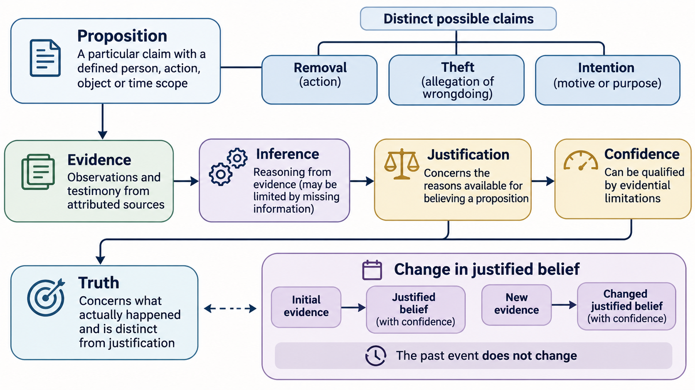
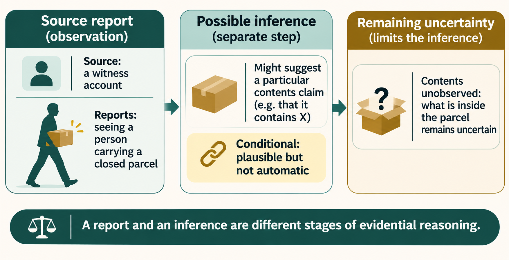
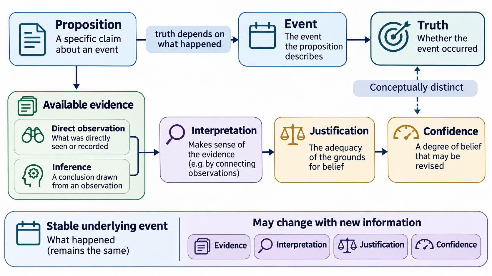
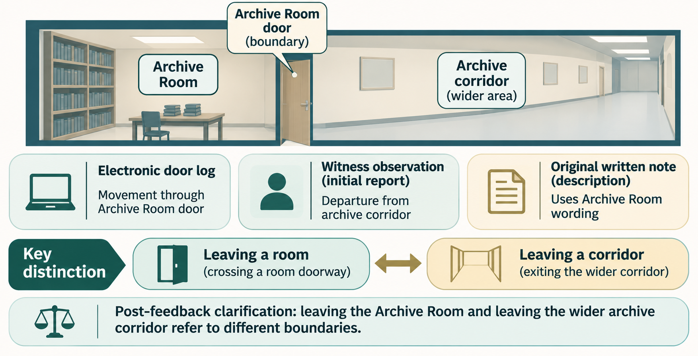
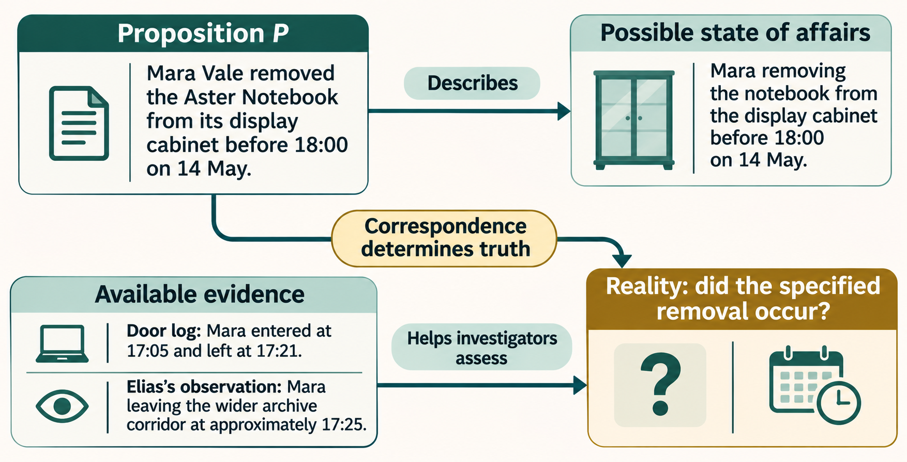
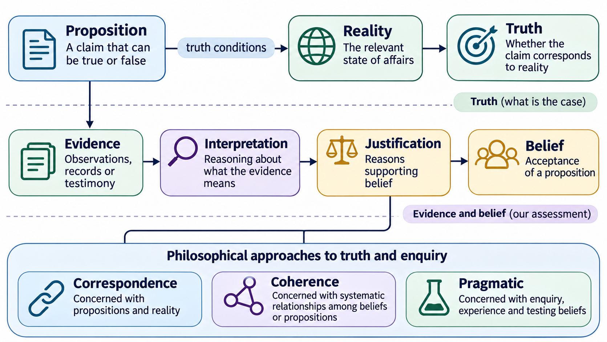
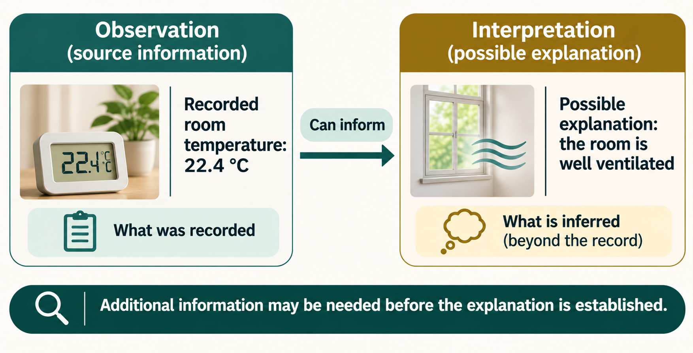

Figure 1. A quiet archive room containing a locked glass display cabinet and a detective's desk with carefully arranged papers.
A valuable notebook has disappeared from a locked cabinet. Witnesses disagree, records appear to contradict one another, and the evidence does not tell a straightforward story.
You are about to investigate The Slippery Case of the Truth. But this is not an ordinary detective mystery. Your real challenge is to consider what makes a claim true, how evidence supports a belief, and why a convincing explanation might still be mistaken.
As the case unfolds, you will encounter three influential philosophical approaches to truth: correspondence, coherence and pragmatism. Each raises different questions about reality, belief and enquiry. You will use these ideas to reconsider your own judgements and develop a philosophical argument.
You do not need any previous experience of philosophy. The investigation introduces the concepts as you need them.
What you will develop: the ability to distinguish truth from belief and justification, explain and compare philosophical approaches, evaluate competing interpretations, and construct a reasoned conclusion that acknowledges uncertainty and objections.
How the journey works: Begin with the evidence and make an initial judgement. A complication will challenge your reasoning. You will then explore philosophical perspectives, reconsider the investigation and produce a final argument showing how your thinking has developed.
The journey takes approximately 90 minutes and can be completed independently over one week. You may pause between experiences. Keep your earlier judgements in mind because later experiences will ask you to reconsider them.
The important question is not simply who did what. It is what you can reasonably claim to be true, and why.
Draft not saved
The case opens: Your first judgement
Overview
A historically significant notebook has disappeared from a locked display cabinet at the fictional Bellwether Institute. Detective Ada Mercer invites you to examine a precise claim about what happened.
Begin by interpreting the claim carefully. You will then examine six pieces of initial evidence before recording your own provisional judgement. Work through the activities in order, and make your judgement before reading the concluding feedback. You can revisit the evidence whenever you need to.
The case is fictional, and all information needed for this encounter is provided in text.
Learning purpose
Investigating a claim requires more than deciding whether an account sounds convincing. You need to establish exactly what is being claimed, identify which observations are relevant, distinguish those observations from your interpretations, and judge how far the available evidence supports a conclusion.
Your aim is to make a defensible first judgement, not to guess the eventual outcome. A supported position, a position that the evidence does not yet support, or a reasoned expression of uncertainty can each be appropriate when accompanied by careful explanation. You will also practise recognising when a public allegation goes beyond what a witness actually reports.
Knowledge summary
A proposition is a statement that makes a particular claim about the world. To investigate one, begin with its exact wording: who is said to have done what, involving which object, and within what time boundary? Changing any of these details may change the proposition being considered.
A claim that someone removed an object is different from a claim that they stole it. Theft introduces an allegation of wrongdoing that cannot simply be read into the physical action. Questions about intention also require their own grounds. Keep these claims separate even when they concern the same person and object.
Evidence is information that may count for or against a proposition. It can include observations, witness testimony and information about access or opportunity. The source matters: a witness's report tells you what that person says they observed, but it does not automatically establish every conclusion that might be drawn from the report.
An observation and an inference play different roles. For example, if a witness reports seeing someone carry a closed container, the reported observation concerns the person and the container. A claim about what was inside would be an additional inference unless its contents were independently established. The inference may be worth investigating without being treated as an observed fact.
Justification concerns the reasons available for believing a proposition. Truth concerns whether the proposition actually matches what happened. A belief may be carefully justified without being certain, and further evidence may change how reasonable that belief is. New evidence does not itself change the past event.
When weighing evidence, ask how directly each item bears on the precise proposition, what its source could reasonably know, what alternative interpretations remain possible, and which missing information would make the greatest difference. Your confidence should reflect the strength and limitations of your reasons rather than a desire to reach a definite verdict.

Figure 1. How claims, evidence, inference, justification and truth relate without becoming interchangeable.
The map places a proposition at the centre as a claim with a defined scope. Removal, theft and intention appear as distinct claims. Source-attributed observations and testimony connect to evidence, which can inform inferences; missing information can limit those inferences. Evidence and reasoning connect to justification and qualified confidence. Truth occupies a separate position, referring to what actually happened rather than what is currently believed. A final relationship indicates that new evidence may change justification without changing the past event.
Learning outcomes
By the end of this lesson, you should be able to:
Identify the precise claim made by proposition P and distinguish whether Mara Vale removed the Aster Notebook from the separate questions of theft and intention. (LO1)
Analyse the initial case evidence by distinguishing reported observations from inferences and identifying assumptions or gaps that limit what can reasonably be concluded about P. (LO2)
Construct and justify a provisional judgement about whether the available evidence supports P, explaining the strongest evidential reason for that position and identifying an unresolved question that affects confidence in the conclusion. (LO3)
What exactly is being investigated?
Connect your learning
The investigation begins with a distinction between an event and the claims people make about it. Establishing precisely what proposition P asserts will help you avoid treating evidence about access, removal, theft and intention as though it answered the same question.
Detective Ada Mercer invites you to examine a fictional investigation at the Bellwether Institute. On Thursday 14 May 2026, the Aster Notebook is discovered missing from its locked display cabinet in the Archive Room. Your task is not to identify a culprit. It is to decide what a particular claim means before considering whether the evidence supports it. Allow approximately 3 minutes.
Begin with the wording of the proposition, not with a theory about who is responsible. Separate the physical action being investigated from possible explanations or intentions.
Which words in proposition P would you need to change to turn it into an allegation of theft, and why would that create a different question?
Explore the idea
One claim is not every claim
Reading a proposition carefully
A proposition is a claim about how things are or were. We can ask whether it is true and whether the evidence available to us gives us good reasons to believe it.
The exact wording matters. A claim that someone moved an object describes an action. A claim that someone stole an object adds an allegation of wrongdoing. A claim that someone intended to keep an object introduces a further question about intention.
These claims may concern the same person and object, but they are not interchangeable. Evidence relevant to one may leave another unresolved.
When examining P, first identify who is named, what action is asserted, which object is involved, where the action is said to have occurred and the time boundary. Do not silently add a motive or substitute a more serious allegation.
You do not yet need to decide whether P is true. Your first task is to understand exactly what would have to be established.
Your task
Revising against
Read Detective Mercer's case introduction and the exact wording of proposition P.
Detective Mercer's opening briefing
The case opens
Detective Ada Mercer addresses you:
"Welcome to the Bellwether Institute. This is a fictional investigation, and I need you to examine the evidence carefully rather than jump to an accusation.
"On Thursday 14 May 2026, the Aster Notebook, a historically significant handwritten notebook, was discovered missing from its locked display cabinet in the Institute's Archive Room.
"Our investigation begins with one precise proposition. We will call it P:
> Mara Vale removed the Aster Notebook from its display cabinet before 18:00 on 14 May.
"I am not asking you to identify a culprit. I am asking whether the information available to us justifies believing this particular claim.
"Be careful with the wording. Removing an object and stealing it are different propositions. Even if we established that somebody removed the notebook, we would still need to consider separately whether that person stole it or acted with a particular intention.
"Before looking at the witness accounts, tell me exactly what P claims. Then explain what would be added if someone accused Mara of theft."
The investigation is fictional. Its people, institution and events have been created for learning purposes.
In your own words, identify the action, person and time boundary specified by P.
Define the disputed claim
Explain how the claim that Mara removed the notebook differs from the claim that she stole it.
What to produce
A concise learner-authored interpretation that accurately identifies Mara Vale, removal of the Aster Notebook from its display cabinet and the deadline of before 18:00 on 14 May. The response distinguishes removal from theft without assuming that either action establishes a particular motive. It preserves the proposition's scope rather than replacing it with an accusation of dishonesty.
Your draft is saved on this device when possible. It is not submitted.
Record your response for What P claims.
Record your response for How removal differs from theft.
Complete your response first, then use this material to check or improve it.
Review your answer
Criterion 1 of 4
Have you identified the person and action actually named in P?
Show guidance for criterion 1
Why this matters
Changing the person or action would mean evaluating a different proposition from the one Detective Mercer is investigating.
What to look for
A. My interpretation names Mara Vale as the person specified.
B. My interpretation identifies removal of the Aster Notebook from its display cabinet as the claimed action.
If something is missing
Missing A: Check that your explanation identifies Mara Vale rather than an unnamed person or everyone with access to the Archive Room.
Missing B: Distinguish the act of removing the notebook from the cabinet from merely entering the room, carrying a case or causing the notebook to be missing.
You have established that P concerns removal rather than theft. You can now apply that distinction to the available accounts, examining whether each observation bears directly on removal, merely establishes an opportunity, or leaves an important question unanswered.
Detective Mercer now provides the information available at the beginning of the investigation. Several accounts may appear relevant, but each has limits. Examine what each source actually reports before deciding what it might suggest about proposition P. Allow approximately 4 minutes.
Treat testimony as evidence about what someone reports, not automatic proof of every interpretation that could follow. Ask what an observation establishes, what it suggests and what additional information would be needed to strengthen the inference.
Which part of your analysis depends most heavily on an assumption rather than something a witness directly reported?
Explore the idea
Read the source-attributed case evidence.
Your task
Revising against
Select at least three pieces of evidence, including Elias Reed's observation and at least one other person's account.

Figure 2. A report and an inference are different stages of evidential reasoning.
The figure begins with a generic witness report: a person was seen carrying a closed parcel. A separate area contains a possible inference about what the parcel holds, connected to the report by a conditional reasoning link rather than an implication of proof. A third area identifies the unresolved question of the parcel's contents and shows how this limits the inference. The figure distinguishes attributed information from interpretation without classifying any evidence from the Bellwether Institute case.
Simulated initial case dossier
Evidence available at the opening of the case
This is a simulated dossier from the fictional Bellwether Institute investigation. The following six items are the information available to Detective Mercer at this stage. Each item identifies its source or evidential status. No interpretation of proposition P has yet been established.
Item 1 — Dr Rowan Bell, curator
Dr Rowan Bell confirmed that the Aster Notebook was present in its locked display cabinet at 16:40 on 14 May. At 18:20, Dr Bell found the display cabinet empty.
Item 2 — Mara Vale's access status
Mara Vale, a collections assistant, had authorised access to the Archive Room that afternoon.
Item 3 — Elias Reed, security officer
Elias Reed reports seeing Mara leaving the archive corridor at approximately 17:25, carrying a rectangular grey case.
The reported location is the archive corridor. The contents of the grey case are not established.
Item 4 — Mara Vale's statement
Mara states:
> I was dealing with conservation preparations. I did not steal the notebook.
Item 5 — Nina Shah, visiting researcher
Nina Shah reports seeing someone wearing a dark jacket near the archive corridor. She cannot identify the person.
Item 6 — Current investigative status
The notebook's whereabouts are unknown to the investigator at this point.
Use the reported particulars rather than assuming what any witness must have meant. You may find that an item is relevant without being decisive.
For each, identify what is directly reported, what might reasonably be inferred about P and what remains unestablished.
Evidence, inference and uncertainty
Enter your responses in the table below. Your draft is saved on this device when possible. It is not submitted.
Source or evidence
What is directly reported?
What might this suggest about P?
What remains uncertain?
Identify which evidence you would give most weight to at this stage, without making your final judgement yet.
Weigh two accounts
Choose at least two items from the initial dossier, including evidence from different sources where possible.
Write a short comparison explaining which item you currently give more weight when considering P and why. Refer to the particular observations or statements rather than relying on general impressions of the people involved.
In your comparison, distinguish having an opportunity to remove the notebook from evidence that the removal actually occurred. Explain one limitation that prevents your preferred item from settling the question on its own.
Your comparison:
What to produce
An evidence analysis containing at least three accurately attributed entries. Each entry distinguishes reported information from an inference about P and identifies a relevant limitation or missing fact. The analysis compares the strength of the accounts rather than merely repeating them, and identifies a defensible reason for giving particular evidence greater or lesser weight. It does not treat the grey case's contents or the unidentified person's identity as established.
Complete your response first, then use this material to check or improve it.
Review your answer
Criterion 1 of 4
Have you attributed the evidence accurately to its source?
Show guidance for criterion 1
Why this matters
Misattribution can make a second-hand report appear to be a direct observation or assign a witness knowledge they have not claimed.
What to look for
A. Each selected dossier item is linked to the correct person or evidential status.
B. Reported times, places and descriptions retain their original limits.
If something is missing
Missing A: Match each entry to the named source in the dossier and distinguish the access-status information from a witness's statement.
Missing B: Check the exact time and location in each selected item; retain qualifications such as 'approximately' and avoid changing a corridor observation into an observation inside the Archive Room.
Have you kept reported observations separate from inferences about P?
Show guidance for criterion 2
Why this matters
An inference may be reasonable without being directly observed; confusing the two overstates what the available evidence establishes.
What to look for
A. The direct-report column contains what the source actually reports rather than my conclusion about removal.
B. My inference column explains how a reported detail could bear on the action specified by P.
If something is missing
Missing A: Move any statement about what the notebook's disappearance means into the inference column unless that statement was itself directly reported.
Missing B: For each inference, connect the particular observation to the question of removal from the cabinet before 18:00 rather than merely repeating the evidence.
Have you identified meaningful uncertainty rather than filling gaps with assumptions?
Show guidance for criterion 3
Why this matters
The credibility of a provisional interpretation depends partly on recognising what the initial reports do not establish.
What to look for
A. My analysis identifies at least one material fact that the selected evidence does not settle.
B. I have not treated authorised access as a direct observation of removal.
If something is missing
Missing A: Name a specific unknown relevant to your inference, such as the contents of an observed object or the identity of a person who was not recognised.
Missing B: If your analysis moves from access to removal, identify the additional evidential step that would be needed.
Have you justified the relative weight you give the accounts?
Show guidance for criterion 4
Why this matters
A comparison that merely names a preferred witness does not show why one item is more informative about the disputed proposition.
What to look for
A. My comparison names at least two specific dossier items.
B. I explain how relevance or directness affects the weight I assign.
C. I acknowledge a limitation of the item I favour.
If something is missing
Missing A: Identify the two observations or statements you are weighing and cite the details relevant to P.
Missing B: State why a particular detail bears more or less closely on removal from the cabinet, rather than relying on a general impression of a witness.
Missing C: Identify one unanswered question or alternative interpretation that prevents the preferred item from establishing P by itself.
You have defined the precise claim and examined how the available accounts support different inferences. Now bring those two capabilities together: decide what the evidence currently justifies, identify the strongest reason for your position and record a question that could matter when you reconsider the case.
Detective Mercer asks for your first judgement. You have only the opening evidence, and some important facts remain unknown. Your responsibility is to reach a reasoned provisional position, not to solve the disappearance or prove a particular person dishonest. A carefully justified uncertain judgement is as legitimate as a cautiously supported one. Allow approximately 5 minutes.
Weigh relevance, reliability and limitations together. You do not need certainty to make a provisional judgement, but you should be able to explain why the available evidence warrants your chosen degree of confidence. The correctness of your reasoning is not determined by whether you happen to guess the underlying event.
What is the strongest reason for your present position, what is the most important thing you still do not know, and how might learning it affect your confidence?
Your task
Revising against
Re-examine the initial evidence and your analysis. Choose whether P is supported, not supported or remains uncertain on the information currently available.
Simulated evidence for your judgement
Initial evidence reference
This simulated evidence belongs to the fictional Bellwether Institute investigation. It contains the same six opening items, with no additional findings.
Dr Rowan Bell, curator: Dr Bell confirmed the Aster Notebook present in its locked display cabinet at 16:40 on 14 May and found the cabinet empty at 18:20.
Access status: Mara Vale had authorised access to the Archive Room that afternoon.
Elias Reed, security officer: Elias reports seeing Mara leaving the archive corridor at approximately 17:25 carrying a rectangular grey case. The contents of the case are not established.
Mara Vale: "I was dealing with conservation preparations. I did not steal the notebook."
Nina Shah, visiting researcher: Nina reports seeing someone in a dark jacket near the archive corridor but cannot identify the person.
Investigative status: The notebook's whereabouts are unknown to the investigator at this point.
The proposition under consideration remains:
> Mara Vale removed the Aster Notebook from its display cabinet before 18:00 on 14 May.
Use this reference to support your own provisional judgement. No conclusion is supplied.
Write your own provisional judgement in a short paragraph, explaining your strongest evidential reason and identifying at least one limitation or alternative interpretation.
Your first judgement
State one specific unresolved question whose answer could strengthen or challenge your judgement.
Your public-facing alternative
Briefly indicate your confidence and explain why it is not necessarily the same as certainty.
Simulated headline and source details
Card 1
A hypothetical headline
The following headline is invented for this learning activity. It is not an authentic publication or an additional report about the investigation.
> Mara was seen with a grey case, so she stole the Aster Notebook.
Initial evidence relevant to the headline
Elias Reed, security officer
Elias reports seeing Mara leaving the archive corridor at approximately 17:25 carrying a rectangular grey case.
The contents of the case are not established.
Mara Vale's statement
> I was dealing with conservation preparations. I did not steal the notebook.
Compare the headline with these attributed particulars. Consider which words describe what Elias reports and which words make a further allegation. Use only the supplied information when drafting your alternative.
Apply the same distinction between a reported action and an allegation of wrongdoing to a separate short claim about the case, without changing your judgement about P.
What to produce
A meaningful learner-authored initial judgement that explicitly states a defensible position on P, identifies and accurately uses the strongest relevant initial evidence, acknowledges a material evidential limitation or alternative interpretation, and formulates a specific unresolved investigative question. The response distinguishes confidence from certainty and avoids asserting theft or intention without support. A brief separate application correctly distinguishes a claim about an observable action from an additional allegation about wrongdoing. The judgement remains provisional and suitable for later reconsideration.
Your draft is saved on this device when possible. It is not submitted.
State your current position on P in your own words. Keep the claim about removal separate from any allegation of theft.
Identify the further allegation and explain how it goes beyond what Elias reports. Refer to the limits of the available information.
Identify the source and particular detail you consider most relevant. Explain how it bears on the action and time specified in P, and why you give it weight.
Write a replacement headline or single sentence suitable for readers who have not seen the case file. Preserve relevant reported information and avoid introducing an unsupported fact or intention.
Identify a missing fact, a possible alternative interpretation or a reason the evidence may be less decisive than it first appears. Explain how this limits your position.
Write one specific question that further investigation could answer. Explain briefly how the answer might strengthen or challenge your current view.
Describe how confident you are in your provisional position. Connect that confidence to the strength and limitations of the available evidence, without treating confidence as certainty.
Complete your response first, then use this material to check or improve it.
Review your answer
Criterion 1 of 4
Does your first judgement state a defensible, appropriately bounded position on P?
Show guidance for criterion 1
Why this matters
Without an explicit position tied to the actual proposition, the response cannot show what you currently judge the initial evidence to justify.
What to look for
A. My position identifies P as the claim about Mara removing the notebook before 18:00 on 14 May.
B. My response makes clear whether I regard P as supported, not supported or uncertain.
C. My stated position is proportionate to the evidence I discuss.
If something is missing
Missing A: State your position in relation to that precise removal claim rather than an accusation of theft or a general question about who is responsible.
Missing B: Name your provisional position explicitly and ensure that the wording does not imply a firmer conclusion than your reasons justify.
Missing C: If your reasons contain substantial unresolved gaps, reconsider whether your wording or confidence should acknowledge those limits more clearly.
Have you used the strongest relevant evidence accurately and explained its weight?
Show guidance for criterion 2
Why this matters
A judgement needs a traceable evidential basis; simply naming a witness or repeating an observation does not explain why the conclusion is warranted.
What to look for
A. My strongest reason identifies a specific source and reported detail.
B. I connect that detail to the removal action and time boundary in P.
C. I explain why the selected detail deserves the weight I assign it.
If something is missing
Missing A: Name the person or evidential status and the particular observation or statement on which your reason depends.
Missing B: Explain how the cited detail bears on removal from the cabinet before 18:00, distinguishing that connection from evidence of access or a different allegation.
Missing C: Give a reason based on the observation's relevance or limits rather than relying solely on the witness's identity or your impression of the account.
Have you acknowledged a material limitation, asked an investigable question and calibrated your confidence?
Show guidance for criterion 3
Why this matters
These elements make the judgement genuinely provisional and create a reasoned basis for reconsidering it when further evidence becomes available.
What to look for
A. My response identifies a specific uncertainty or alternative interpretation.
B. My unresolved question could be answered by further investigation and would matter to P.
C. My confidence statement reflects both evidential support and unresolved limits.
If something is missing
Missing A: Name a missing fact or plausible alternative reading that could affect the inference from your chosen evidence.
Missing B: Turn a broad request for 'more evidence' into a specific question about an unknown fact and indicate how its answer could affect your position.
Missing C: Explain why the available observations warrant your chosen confidence level while distinguishing confidence from certainty.
Does your public-facing alternative distinguish a reported observation from an allegation of wrongdoing?
Show guidance for criterion 4
Why this matters
A public statement can mislead readers if it converts a limited witness report into an established accusation.
What to look for
A. I identify the allegation added by the hypothetical headline.
B. My replacement retains the attribution and relevant limits of the observation.
C. My replacement does not invent facts or treat intention as established.
If something is missing
Missing A: Point to the claim of theft and distinguish it from the narrower observation attributed to Elias.
Missing B: Check that the revised wording makes clear who reported the observation and does not claim knowledge of the grey case's contents.
Missing C: Remove any assertion about the notebook's location, what the case contained or Mara's intentions unless the supplied particulars establish it.
"Your first judgement is a record of what you think the evidence currently justifies. It is not a test of whether you can guess an undisclosed outcome.
"A provisional judgement may favour P, question it or remain uncertain. What matters is whether you can identify the evidence you relied on, explain its relevance and recognise where the available accounts leave room for other interpretations.
"Notice how different questions require different evidence. Whether someone removed the notebook, whether that action amounted to theft and what the person intended are not the same proposition. A witness's reported observation may be relevant without establishing every conclusion someone draws from it.
"You may later have good reasons to change your view. New evidence can alter what it is reasonable to believe without changing what actually happened."
Debrief
Compare your judgement with the evidence you cited. If your strongest reason depends on an unknown detail, make that dependence explicit. If you chose uncertainty, check that you have identified the particular uncertainty rather than using it to avoid evaluating the evidence.
Keep your own wording available for comparison in 'Reconsidering your judgement'. There, you will be able to examine what you initially thought, which later evidence or reasoning challenges or confirms that view, and what you then conclude. The value of the comparison lies in explaining any change or continuity in your reasoning, not in pretending that your initial judgement was more certain than it was.
Page learner-resource closure
Keep proposition P precise: it concerns removal from the display cabinet before 18:00 on 14 May, not an automatic allegation of theft.
Separate what a source reports from what you infer. Identify the missing information whenever an inference goes beyond the observation.
Make your provisional judgement proportionate to the evidence: give your strongest reason, acknowledge a limitation and explain your confidence.
Retain your initial reasoning as a point of comparison when the investigation develops; changing a justified belief is different from changing the past.
Transfer your learning
Reframe a public accusation
Imagine that a public-facing headline about the fictional investigation reads:
> Mara was seen with a grey case, so she stole the Aster Notebook.
A headline addresses readers who may not have examined the evidence. Your task is different from deciding whether proposition P is supported: you must decide what can responsibly be communicated to that audience.
Using the attributed details on the accompanying task card, identify the allegation the headline adds beyond the reported observation. Explain why the observation alone does not establish that allegation. Then write a replacement headline or single sentence that keeps the relevant reported information without presenting an unsupported conclusion as fact.
Use the separate response fields for your analysis and replacement wording. Do not add new facts.
Your draft is saved on this device when possible. It is not submitted.
Draft not saved
A witness, a record and a contradiction
Overview
The investigation at Bellwether Institute continues. You have already considered whether Mara Vale removed the Aster Notebook from its display cabinet before 18:00 on 14 May. Now two records appear to disagree about her movements.
Begin by examining the records yourself. Compare what they actually say, develop possible explanations and record your interpretation before revealing the explanatory feedback. You will then reconsider your earlier judgement and apply the same reasoning to a different fictional investigation.
If you recorded a judgement in The case opens: Your first judgement, have your own response available. If you did not, you can still complete this resource without inventing an earlier position.
Learning purpose
An apparent contradiction can change how convincing evidence seems, but it does not automatically establish what happened. Investigating such disagreements requires careful attention to the source of a claim, what was actually observed or recorded, and what has been inferred.
You will practise distinguishing direct evidence from interpretation, evaluating competing explanations without assuming dishonesty, and making a provisional judgement whose confidence reflects the available grounds. The central philosophical challenge is to separate whether a proposition is true from whether you currently have sufficient justification for believing it.
Knowledge summary
The proposition under investigation
The central proposition is:
P: "Mara Vale removed the Aster Notebook from its display cabinet before 18:00 on 14 May."
A proposition is a claim that can be true or false. P concerns removal from a particular cabinet before a particular time. It does not itself claim that Mara stole the notebook, intended to steal it or took it away from the Institute. These are different claims and would require their own supporting evidence.
Truth, evidence and justification
Truth concerns whether the event described by a proposition actually occurred. Evidence consists of information that may help us determine what happened. Justification concerns whether the available evidence and reasoning provide adequate grounds for believing a proposition.
These concepts are related but not interchangeable. A proposition can be true even when an investigator has little evidence for it. An investigator can also have apparently good reasons for a belief that later turns out to be false. Greater confidence expresses a stronger degree of belief; it does not, by itself, make the proposition more likely to correspond to reality.
When evidence changes, or when an existing source is interpreted more carefully, the justification for a belief may change. The underlying event does not change merely because the investigator revises their view.
What different sources can establish
An electronic access record can establish that a recorded entry or exit occurred according to that system. Its evidential scope depends on which door or location the system monitors. It does not necessarily establish everything a person did before or after passing through that door.
A witness account can provide evidence of what someone reports observing. The wording of an account, however, may contain an imprecise description, a mistaken recollection or an inference that goes beyond the observation itself. An inaccurate statement is not automatically evidence of deliberate dishonesty.
Consider a separate example: a building entry record places a technician inside a laboratory, and a witness reports seeing the technician carrying a closed bag nearby. Those observations may be relevant to a claim about missing equipment, but neither directly establishes what the bag contained. Treating the bag's contents as known would add an inference not supplied by either source.
Comparing apparently conflicting accounts
When sources seem to disagree, begin by identifying the exact claim made by each one. Compare their times, locations, actions and forms of evidence. Ask whether they describe the same event, whether their wording could have different meanings, and whether an observation has been confused with an interpretation.
Several explanations may initially remain possible. One source could be mistaken; a description could be ambiguous; or an account could be deliberately misleading. These possibilities should be tested against the particulars rather than assumed from the existence of a discrepancy.
Even when an apparent contradiction can be explained, the resulting agreement does not guarantee that every statement is true. Consistency between accounts and correspondence with what actually happened are different questions.
Reasoning provisionally
A defensible provisional judgement identifies the evidence relevant to the precise proposition, distinguishes direct support from inference, considers competing interpretations and acknowledges important unknowns.
You do not need certainty to reach a reasoned position. You do need to avoid treating a possibility as an established fact or interpreting missing information as proof that a proposition is false.
The activities will let you apply these distinctions before you receive the explanation of the new Bellwether records. The wider philosophical question of what makes a proposition true will be developed in What makes a claim true?

Figure 1. Truth concerns what happened; evidence and interpretation inform justification and confidence.
A concept map places a proposition alongside the event it describes. One relationship connects the event to the proposition's truth: whether the proposition is true depends on what actually happened. A separate pathway connects available evidence to interpretation, then to justification for believing the proposition. Direct observation and inference are distinguished within that pathway. Justification is connected to confidence, which may increase, decrease or remain unchanged as evidence is reassessed. The underlying event remains separate and unchanged throughout these revisions. No conclusion about the fictional investigation appears.
Learning outcomes
By the end of this lesson, you should be able to:
Compare Elias Reed's written testimony with the electronic Archive Room door log, identifying the apparent discrepancy, what each source establishes and the limits of the evidence. (LO1)
Construct and evaluate plausible explanations for the discrepancy between the two records, distinguishing possible mistakes or ambiguities from claims of deliberate dishonesty. (LO2)
Evaluate whether the newly disclosed evidence changes the justification for their provisional judgement about proposition P, supporting their position with reasons and identifying remaining uncertainty. (LO3)
Explain why a change in evidential justification or confidence does not necessarily establish that a proposition is true or false, using the unresolved investigation to illustrate the distinction. (LO4)
Compare the conflicting records
Identify the apparent discrepancy between the electronic Archive Room door log and Elias Reed's original written incident note without prematurely resolving it.
Connect your learning
The investigation begins with an uncertain proposition supported by incomplete witness accounts and observations. Comparing a new electronic record with an existing witness statement provides an opportunity to examine how apparently conflicting evidence should be interpreted before deciding what it means for the central claim.
Detective Ada Mercer has obtained a new security record from the fictional Bellwether Institute. The investigation still concerns proposition P: "Mara Vale removed the Aster Notebook from its display cabinet before 18:00 on 14 May." The notebook was confirmed present at 16:40 and the cabinet was found empty at 18:20. The investigator does not yet know where the notebook is. If you completed 'The case opens: Your first judgement', revisit your provisional judgement, the reasons you gave and any uncertainty you identified. Keep that reasoning in mind as you examine the new evidence and consider whether your justification changes. The proposition concerns removal, not theft.
Treat each document as evidence with a particular scope. Attend to the exact wording, time, location and action described. Do not resolve the apparent discrepancy before completing your initial comparison.
Identify which part of the two accounts appears most difficult to reconcile and explain why it matters to the investigation.
Explore the idea
Read the electronic Archive Room door log and Elias Reed's original incident note. Complete the comparison workspace by identifying the source, recorded or reported time, location, action and evidential limit of each account.
Your task
Revising against
Identify the apparent discrepancy in your own words. Separate what each source explicitly states from any conclusion you might infer about Mara or the notebook.
Simulated evidence: Two accounts of departure
New evidence from Bellwether Institute
The following documents are fictional records created for this investigation. They are not authentic historical evidence.
The disputed proposition remains:
P: "Mara Vale removed the Aster Notebook from its display cabinet before 18:00 on 14 May."
Document A: Electronic Archive Room door log
Source: Bellwether Institute electronic Archive Room door log, Thursday 14 May 2026.
Person
Recorded action
Time
Mara Vale
Entered Archive Room
17:05
Mara Vale
Left Archive Room
17:21
Document B: Original written incident note
Source: Elias Reed, security officer, original written incident note.
> I saw Mara leave the Archive Room at 17:25 carrying a grey case.
Examine the documents
Read both sources before deciding what their apparent disagreement means.
Pay attention to the recorded times, the locations named, the actions described and the difference between an electronic record and a witness's written account.
Neither document identifies the contents of the grey case.
Record your comparison before moving to an explanation of the discrepancy.
Source comparison workspace
Enter your responses in the table below. Your draft is saved on this device when possible. It is not submitted.
Use the two documents to complete the table. Record what each source actually says before interpreting the apparent conflict. In the final column, identify a conclusion that the source does not establish.
Source
Time
Location
Action described
What this source does not establish
Electronic Archive Room door log
Elias Reed's original written incident note
Describe the apparent discrepancy
Question
Your response
What appears difficult to reconcile between the two accounts?
Use the exact wording of the documents where it matters. Do not assume that an apparent disagreement proves either source was fabricated.
What to produce
A completed comparison that accurately extracts the relevant particulars from both records, identifies the apparent conflict in their accounts and distinguishes direct evidence from inference. The response should identify at least one important limitation of each source without assuming that either source establishes the contents of the grey case or proves proposition P.
Complete your response first, then use this material to check or improve it.
Review your answer
Criterion 1 of 4
Have you extracted the relevant particulars accurately from both sources?
Show guidance for criterion 1
Why this matters
A mistaken time, location or attribution can create a conflict that the documents themselves do not contain.
What to look for
A. Both source rows contain the times reported or recorded in their respective documents.
B. The location and action columns reflect the wording of each source.
C. The electronic record and the written testimony are attributed to different sources.
If something is missing
Missing A: Return to each document and enter its stated times in the appropriate row, keeping the electronic entries distinct from the witness's written account.
Missing B: Replace any assumed location or action with the words supported by that particular document.
Missing C: Identify which information comes from the door-recording system and which comes from Elias's written statement.
Construct and evaluate alternative explanations before receiving the canonical clarification, then reconsider the initial interpretation.
Connect your learning
Your comparison established what the sources actually say and where they appear to disagree. You can now move from identifying a discrepancy to constructing and evaluating explanations, using the same source particulars rather than treating the discrepancy itself as proof of dishonesty.
The records appear to describe incompatible departures. Before receiving Detective Mercer's explanation, investigate how this disagreement might have arisen. An inaccurate statement may reflect a mistake, ambiguity or deliberate deception, but these possibilities require different kinds of support.
Consider whether the sources necessarily describe the same event and whether their language is equally precise. Treat proposed explanations as hypotheses until their fit with the disclosed evidence has been examined.
After revealing the explanation, record what you initially thought, which distinction or evidence confirmed or challenged that view, and what you now conclude about the reliability and interpretation of Elias's account.
Explore the idea
Examine the two records and the initial report of Elias's observation. Develop at least two plausible explanations for the apparent discrepancy. For each, explain how it could account for the evidence and identify what remains unsupported. Decide which explanation is best supported by the available information, distinguishing possible error or ambiguity from deliberate fabrication. Record your reasoning before revealing the explanatory feedback. After reading the feedback, briefly identify what your initial interpretation captured or missed.
Your task
Revising against
Simulated evidence: Three descriptions to examine
Investigating the apparent contradiction
These are fictional case records and reports from Bellwether Institute. The three items below contain information already disclosed in the investigation.
Source 1: Electronic Archive Room door log
Source: Bellwether Institute electronic Archive Room door log, Thursday 14 May 2026.
Person
Recorded action
Time
Mara Vale
Entered Archive Room
17:05
Mara Vale
Left Archive Room
17:21
Source 2: Elias Reed's original written incident note
Source: Elias Reed, security officer.
> I saw Mara leave the Archive Room at 17:25 carrying a grey case.
Source 3: Initially disclosed witness report
Source: Elias Reed's observation as reported to the investigator during the initial investigation.
Elias reported seeing Mara leaving the archive corridor at approximately 17:25 carrying a rectangular grey case.
Your investigation
Compare the locations and times described by the three sources.
Consider more than one possible explanation for the apparent disagreement. For each explanation, identify which particulars it accommodates and what evidence would still be missing.
Record your own interpretation before revealing Detective Mercer's explanatory feedback. Do not assume that a mistaken description must be deliberately dishonest.

Figure 2. Post-feedback clarification: leaving the Archive Room and leaving the wider archive corridor refer to different boundaries.
The diagram distinguishes an enclosed Archive Room from the wider archive corridor outside it. A doorway marks the boundary of the room, while the corridor extends beyond that doorway. The electronic door log is associated with crossing the room's doorway. The initial witness report is associated with leaving the wider corridor. Elias's original written note names the Archive Room, but its wording is distinguished from the electronic record. The two departure locations are therefore not interchangeable. No complete route, case contents or conclusion about the notebook is represented.
Competing explanations workspace
What to produce
A reasoned comparison of at least two possible explanations, each connected to specific source particulars and accompanied by an evidential limitation. The learner identifies a defensible interpretation, explains why an inaccurate statement alone is insufficient to establish dishonesty, and records how the subsequent explanation confirms or challenges their original reasoning. The initial response must not be supplied with the intended reconciliation in advance.
Your draft is saved on this device when possible. It is not submitted.
Describe one way the apparent disagreement could have arisen.
Identify the source particulars this explanation accommodates and at least one point it does not establish.
Describe a different possible explanation. It may involve imprecise wording, mistaken recollection or another hypothesis, but do not present an unproven allegation as fact.
Identify the source particulars relevant to this alternative and what additional evidence would be needed to support it.
Which explanation currently fits the available evidence best? Explain your reasoning and distinguish possibility from proof.
After revealing the explanation, record what you initially thought, what confirmed or challenged that view, and what you now conclude about the accounts.
The electronic door log records Mara leaving the Archive Room through its door at 17:21.
Elias's observation concerns Mara leaving the wider archive corridor at approximately 17:25, carrying a rectangular grey case.
These are different locations. A person can leave a room and subsequently leave the corridor outside it. The two times therefore do not have to describe the same departure.
Elias's original written note says that he saw Mara leave the Archive Room at 17:25. In this fictional case, that wording conflates the Archive Room with the wider archive corridor. His original note is imprecise about the location of the departure he observed.
Why the interpretation changes
If both sources are treated as descriptions of the same departure through the same doorway, the different times appear incompatible.
If the electronic record is understood as recording passage through the Archive Room door, while Elias's observation is understood as concerning the wider corridor, the apparent contradiction can be reconciled. The records concern different movements, and the original written note uses the location imprecisely.
This distinction matters because evidence has a scope. The electronic log records movement through a particular door. Elias reports an observation of Mara carrying a case. Neither source, on its own, records Mara removing the Aster Notebook from its cabinet.
Mistake, ambiguity and dishonesty
An inaccurate description can arise in several ways:
A mistake occurs when someone reports a detail incorrectly.
Ambiguity occurs when wording permits more than one interpretation or fails to distinguish relevant locations clearly.
Dishonesty involves an intention to mislead. Establishing that intention requires evidence beyond the mere presence of inaccurate wording.
Elias's original note is inaccurate about the location of the observed departure. That does not establish that he fabricated his observation or intended to deceive anyone.
Nor does reconciling the records establish what was inside the grey case. The notebook's whereabouts remain unknown at this stage.
What this means for P
P remains: "Mara Vale removed the Aster Notebook from its display cabinet before 18:00 on 14 May."
The discrepancy may change how you interpret or weigh Elias's testimony. It does not, by itself, demonstrate that P is false or establish that P is true.
Return to your response and record how this explanation affects your original interpretation.
Reconsider your judgement about P
Evaluate whether the new evidence changes the justification for the learner's earlier provisional judgement while maintaining the distinction between removal and theft.
Connect your learning
You have distinguished the records' claims and examined how apparently conflicting accounts can be interpreted. The remaining challenge is to determine what that analysis means for your own provisional judgement about P, while separating the reliability of a witness's wording from the truth of the central proposition.
The discrepancy has now been examined, but the investigation remains unresolved. Return to the exact proposition: "Mara Vale removed the Aster Notebook from its display cabinet before 18:00 on 14 May." Your task is to decide what the available evidence justifies believing, not whether Mara committed theft.
Evaluate the evidential contribution of each source rather than simply counting sources. Consider whether an imprecise statement loses all evidential value or whether only a particular interpretation of it is weakened.
Record what you previously thought, which evidence or reasoning challenged or confirmed your position, and what you now conclude about P and why.
Your task
Revising against
Consult your earlier provisional judgement and reasons, where available, alongside the disclosed evidence. Identify which reasons still carry weight, which require qualification and what remains uncertain. Decide whether your confidence in P has increased, decreased or remained unchanged, and justify that position using the evidence. Record your earlier view, the evidence or reasoning that challenged or confirmed it, and your current conclusion. If you did not form an earlier judgement, state that and give a current provisional judgement without inventing a previous response.
Simulated evidence dossier: The case so far
Bellwether Institute: Evidence available so far
This is a fictional investigation. The records and testimony below are simulated educational evidence.
The disputed proposition is:
P: "Mara Vale removed the Aster Notebook from its display cabinet before 18:00 on 14 May."
The question is whether Mara removed the notebook. It is not a claim that she stole it.
Cabinet observations
Source: Dr Rowan Bell, curator.
At 16:40 on Thursday 14 May 2026, Dr Bell confirmed that the Aster Notebook was present in its locked display cabinet.
At 18:20, Dr Bell found the display cabinet empty.
Authorised access
Source: Institute access information disclosed during the initial investigation.
Mara Vale, a collections assistant, had authorised access to the Archive Room that afternoon.
Security officer's observation
Source: Elias Reed, initial report of his observation.
Elias reported seeing Mara leaving the archive corridor at approximately 17:25 carrying a rectangular grey case.
Mara Vale's statement
Source: Mara Vale.
> I was dealing with conservation preparations. I did not steal the notebook.
Visiting researcher's observation
Source: Nina Shah.
Nina reported seeing someone wearing a dark jacket near the archive corridor at approximately 17:32. She could not reliably identify the person.
Electronic Archive Room door log
Source: Bellwether Institute electronic Archive Room door log, Thursday 14 May 2026.
Person
Recorded action
Time
Mara Vale
Entered Archive Room
17:05
Mara Vale
Left Archive Room
17:21
Original written incident note
Source: Elias Reed, security officer.
> I saw Mara leave the Archive Room at 17:25 carrying a grey case.
Clarification already established
The electronic log concerns departure through the Archive Room door. Elias's observation concerns departure from the wider archive corridor. His original written note conflates these locations. The different departure times can therefore describe different movements.
This clarification does not establish the contents of the grey case or whether Mara removed the notebook from its cabinet.
What remains unknown
The investigator does not yet know where the Aster Notebook is. The contents of the grey case have not been established.
Use this dossier to decide what the available evidence justifies believing about P. You may reach a provisional conclusion, but distinguish that judgement from certainty about what happened.
Reassessing your judgement
What to produce
A concise evidence-based judgement about P that identifies the learner's earlier position where available, evaluates the effect of the new evidence on the original reasons, states a current position with an appropriately qualified confidence judgement, and identifies remaining uncertainty. The response distinguishes removal from theft and does not treat the discrepancy as proof that P is false.
Your draft is saved on this device when possible. It is not submitted.
State your original view about P and the evidence or reasoning you relied on. If no earlier response is available, record that here.
Identify the relevant observations and records. Explain how their scope, accuracy and limitations affect the reasons for your view. Consider both supporting and competing interpretations.
State your present provisional position and explain how the evidence supports it. Keep the claim about removal distinct from any claim about theft or motive.
Describe your current level of confidence and whether it has increased, decreased or remained unchanged. Explain which evidence or reasoning accounts for that position.
Identify the unresolved facts that limit how strongly the available evidence can justify your conclusion.
Complete your response first, then use this material to check or improve it.
Review your answer
Criterion 1 of 4
Have you made your earlier reasoning and any change in judgement observable?
Show guidance for criterion 1
Why this matters
Without a comparison between positions, the response cannot demonstrate how new evidence affected the learner's justification.
What to look for
A. The response records the earlier judgement and reasons if available, or explicitly notes their absence.
B. The response identifies evidence or reasoning that confirmed or challenged the earlier position.
C. The response explains whether the current judgement differs from the earlier one.
If something is missing
Missing A: Consult your own earlier work if available and state the position and reasons you actually gave; otherwise note that no earlier response is available.
Missing B: Connect at least one newly examined source detail to a reason you previously accepted or questioned.
Missing C: State whether you retained, qualified or changed your position and explain the evidential basis for that development.
Have you used the disclosed evidence to justify your current position?
Show guidance for criterion 2
Why this matters
A conclusion about P needs support from evidence relevant to removal, not simply an impression of which character seems credible.
What to look for
A. The judgement refers to specific cabinet observations, access information, witness testimony or door-log entries.
B. The response distinguishes what a source directly establishes from what must be inferred.
C. The response weighs evidence that supports the position against a limitation or competing interpretation.
If something is missing
Missing A: Identify the particular source details on which your judgement depends and state their relevance to the proposed removal.
Missing B: For a key piece of evidence, state its direct content and then explain the additional inference needed to connect it to P.
Missing C: Identify a relevant uncertainty or alternative reading and explain why your current judgement remains defensible, or needs qualification, in light of it.
Have you kept removal, theft and intention distinct?
Show guidance for criterion 3
Why this matters
Confusing these claims changes the proposition under investigation and can make the reasoning appear stronger than the evidence warrants.
What to look for
A. The current judgement directly addresses whether Mara removed the notebook before 18:00.
B. The response does not treat Mara's denial of theft as a direct denial of every possible removal.
C. Any discussion of motive or dishonesty is clearly separated from evidence about removal.
If something is missing
Missing A: Restate your conclusion in relation to the exact proposition P rather than a broader allegation.
Missing B: Distinguish the action described in P from the separate question of whether that action would constitute theft.
Missing C: Identify which part of your response concerns an action and which concerns an intention, then qualify any intention not established by the evidence.
Consolidate the distinction between truth, evidence, inference, justification and confidence, then transfer it independently to a different fictional investigation.
Connect your learning
Your reassessment of P required you to distinguish the strength of the available evidence from the event being investigated. You can now express that distinction as a general principle and test whether you can apply it independently when the proposition and evidential context change.
The investigation has shown that new evidence can change how reasonable a belief appears without changing what actually happened. Use that distinction to explain the philosophical problem raised by the case, then apply the same reasoning to a different claim.
Separate three matters: the event that would make a proposition true, the information currently available about that event, and the confidence justified by that information. Apply the distinction to the new claim without importing facts from the Bellwether Institute investigation.
Identify the distinction you can now apply to a new claim and one uncertainty that would still require further evidence. Carry this reasoning into 'What makes a claim true?', where the relationship between truth and justified belief will be examined more closely.
Explore the idea
Examine a separate fictional situation: a university equipment-room access record shows that a staff member entered a room, while a witness reports seeing that person carrying a closed equipment case nearby. The disputed claim is that the staff member removed a particular instrument from its storage cabinet. Apply the same evidential reasoning to this different claim. Identify what the observations establish, what would remain an inference, and why confidence in the claim could change without changing the underlying event.
Simulated evidence: A different missing instrument
A separate university equipment-room enquiry
This is a fictional scenario created for learning. It is not connected to Bellwether Institute or the Aster Notebook investigation.
A university department is investigating whether a particular scientific instrument was removed from its storage cabinet.
The disputed proposition is:
Q: "A staff member removed the scientific instrument from its storage cabinet."
Source A: Equipment-room access record
The university's access record shows that the staff member entered the equipment room.
Source B: Witness observation
A witness reports seeing the same staff member carrying a closed equipment case nearby.
Limits of the available records
The contents of the closed equipment case have not been established.
Neither available observation directly records the instrument being removed from its storage cabinet.
Use these particulars to examine what can be justified about Q. Do not assume an outcome or introduce additional facts.
Your task
Revising against
First, write a short explanation using P to distinguish the truth of a proposition from evidence, justification and confidence. Explain why resolving an apparent contradiction does not automatically establish whether P is true or false.
Truth, evidence and transfer workspace
What to produce
Two concise, connected explanations. The first distinguishes the truth of P from the reasons currently available for believing it and explains why reconciliation of the records does not settle the investigation. The second independently applies the distinction to the new equipment-room claim, separating observed access and possession of a closed case from an unsupported conclusion about the instrument. Both explanations should acknowledge uncertainty without treating uncertainty as proof of falsity.
Your draft is saved on this device when possible. It is not submitted.
Explain what would make P true, what the currently available evidence contributes, and how justification for believing P differs from the event itself.
Explain what changes when the two departure records are interpreted more clearly and what remains unresolved about P.
Identify the observations directly supplied by the access record and witness report. Keep the recorded or reported actions separate from the disputed removal.
Explain which additional conclusion about Q would require further evidence and why the available observations do not directly establish it.
Compare the relationship between evidence, justification and confidence in the two investigations. Explain why a change in what an investigator reasonably believes does not itself change what happened.
Have you acknowledged uncertainty without treating it as falsity?
Show guidance for criterion 4
Why this matters
An unresolved claim can still have a definite truth value even when the available evidence does not justify certainty about it.
What to look for
A. The response identifies at least one material uncertainty in the equipment-room enquiry.
B. The response avoids claiming that insufficient evidence proves the disputed proposition false.
C. The response explains how new evidence could affect confidence without altering the past event.
If something is missing
Missing A: Name a missing fact that would matter to deciding whether the instrument was removed.
Missing B: Distinguish the limits of current justification from a conclusion about what did not happen.
Missing C: Connect a possible improvement in the evidence to a change in justified belief, while keeping the underlying occurrence conceptually separate.
Imagine that you are advising the university department investigating proposition Q in the separate equipment-room scenario.
Write a short evidence-based explanation for the department that:
Identifies what the access record and witness observation actually establish.
Distinguishes those observations from the claim that the instrument was removed from its storage cabinet.
Explains how far the available evidence justifies belief in Q and what remains uncertain.
Explains why later changes in confidence or justification would not, by themselves, change the event that actually occurred.
Use the equipment-room evidence rather than importing facts from the Aster Notebook case. Do not assert that the instrument was or was not removed when the supplied evidence does not establish that outcome.
Record your explanation in the equipment-room fields of the response workspace.
Your draft is saved on this device when possible. It is not submitted.
What makes a claim true?
One claim, two different questions
At the Bellwether Institute, the Aster Notebook has disappeared from its display cabinet. Investigators have testimony, an electronic security record and several possible interpretations of what happened. But before considering which explanation is most convincing, we need to be precise about the claim being investigated.
The central proposition is:
P: "Mara Vale removed the Aster Notebook from its display cabinet before 18:00 on 14 May."
A proposition is something that can be true or false. It makes a claim about how things are or what happened. The truth condition of a proposition is what would have to be the case for that proposition to be true.
For P to be true, Mara must have removed the Aster Notebook from its display cabinet before 18:00 on 14 May. If she did not do that, P is false. This is a question about the event itself, not about how persuasive the available evidence appears.
Notice what P does not say. It does not claim that Mara stole the notebook, acted dishonestly or intended to keep it. Removing an object and stealing it are different claims. Mara's statement, "I was dealing with conservation preparations. I did not steal the notebook," addresses theft, but it does not by itself settle whether she removed the notebook.
We can now separate two questions. First, what would make P true? The answer concerns what actually happened. Second, what would justify believing P? That answer concerns the evidence available to an investigator and the reasoning used to interpret it.
If you completed The case opens: Your first judgement and A witness, a record and a contradiction, revisit your own initial judgement, the reasons you gave and your interpretation of the conflicting departure times. Keep those earlier ideas in mind as you read. They provide a way to examine the difference between a conclusion and the reasons supporting it, regardless of whether you accepted P, rejected it or remained uncertain.
The investigation therefore involves two related but different tasks: understanding what would make the proposition true and deciding what the available evidence gives us reason to believe.
Being right is not the same as having good reasons
A belief is something a person accepts as true. Someone might believe P because Mara had authorised access to the Archive Room and Elias reported seeing her carrying a rectangular grey case. Another person might remain unconvinced because nobody has established what was inside the case.
Evidence is information relevant to assessing a claim. Justification concerns whether the available evidence provides adequate reasons for believing it. These are not the same as truth. Truth concerns whether the proposition is true; justification concerns whether accepting it is reasonable on the information available.
Consider Mara's authorised access. It establishes that she could enter the Archive Room. That is relevant evidence because it concerns opportunity. But being able to perform an action does not establish that the action occurred. The inference from "Mara had access" to "Mara removed the notebook" needs further support.
Two possibilities reveal why truth and justification must be distinguished.
First, suppose a proposition is true but the investigator has very little evidence for it. The investigator may have no adequate reason to believe the proposition, even though it correctly describes reality. In the Aster Notebook case, we can consider the conditional possibility that P is true while the initially available evidence remains insufficient to establish it. This is a conceptual possibility, not a disclosure of what happened.
Second, imagine a different, entirely hypothetical investigation in which a witness makes a careful identification under apparently reliable conditions. An investigator reasonably accepts the identification. Later, it turns out that the witness was mistaken. The investigator's belief may have been justified by the evidence available at the time, yet the belief was false.
These examples show why a responsible judgement and a correct judgement are not always the same achievement.
Certainty introduces another distinction. A person can feel completely certain and still be wrong. This is subjective certainty: the strength of someone's conviction. Evidential confidence, by contrast, concerns how strongly the available reasons support a conclusion. Logical certainty is stronger still: a conclusion follows necessarily from accepted premises through valid reasoning. Ordinary investigative evidence rarely provides that kind of guarantee.
Several pieces of evidence may increase confidence, but their quality matters more than their number. Repeated versions of one mistaken observation do not necessarily provide independent confirmation. Nor does a confident witness automatically provide conclusive evidence.
An investigator can therefore have good reasons without having proof, or reach the correct conclusion without having adequate reasons. The task is to assess what the evidence supports while recognising that evidence and interpretation can be fallible.
Truth and justification: Four possibilities
Is the proposition true?
Is believing it justified?
What this means
True
Justified
The proposition accurately describes reality, and the available evidence provides adequate reasons for believing it.
True
Unjustified
The proposition accurately describes reality, but the person believing it lacks adequate supporting reasons. The belief is correct without being adequately justified.
False
Justified
The proposition does not accurately describe reality, but the available evidence provides reasonable grounds for accepting it. The person has good reasons but reaches a mistaken conclusion.
False
Unjustified
The proposition does not accurately describe reality, and the person lacks adequate reasons for believing it.
Linear text equivalent
Possibility 1: True and justified. A proposition describes what actually happened, and the available evidence adequately supports believing it.
Possibility 2: True but unjustified. A proposition describes what actually happened, but the person believing it does not have adequate evidence. Being right does not necessarily mean having good reasons.
Possibility 3: False but justified. A proposition does not describe what actually happened, but the available evidence reasonably supports believing it. A responsible judgement can still be mistaken.
Possibility 4: False and unjustified. A proposition does not describe what actually happened, and there are no adequate reasons for accepting it.
Closing text
The four combinations are logically possible because truth concerns the proposition's relationship to reality, while justification concerns the reasons available to a believer. A person's certainty does not determine either dimension. The table does not identify which combination applies to proposition P.
What did the witness and the record actually establish?
The difference between observation and interpretation becomes clearer when we examine the two accounts of Mara's departure.
The electronic Archive Room door log records Mara entering at 17:05 and leaving at 17:21.
Elias Reed's original written incident note states: "I saw Mara leave the Archive Room at 17:25 carrying a grey case."
At first, these accounts appear inconsistent. The electronic record places Mara's departure at 17:21, while Elias's note places it at 17:25. If both descriptions referred to the same doorway and the same departure, the difference would require explanation.
But the Archive Room and the wider archive corridor are not the same location. The door log records Mara leaving the Archive Room. Elias observed her leaving the wider archive corridor at approximately 17:25. His written note conflated the two locations.
This distinction explains how both timings can be compatible. Mara could leave the Archive Room at 17:21 and be observed leaving the archive corridor at approximately 17:25. We do not need to conclude that Elias invented his observation to understand the discrepancy.
The example also reveals different layers of reasoning. An observation or record provides information: a recorded door event, or a witness's report of someone carrying a case. Interpretation concerns what that information means. An inference moves from the information towards a conclusion, such as whether Mara removed the notebook.
The electronic log establishes recorded entry and exit times, not whether Mara opened the display cabinet. Elias's observation concerns Mara carrying a grey case, not its contents. Neither source, considered alone, establishes P.
It would therefore be a mistake to reason that the door log proves Elias was lying. It would also be a mistake to reason that the grey case must have contained the notebook. Both conclusions go beyond what the evidence establishes.
Resolving the apparent contradiction improves our interpretation of the evidence. It does not settle the investigation. Several possible accounts remain compatible with what has been disclosed. Philosophers sometimes describe this situation as underdetermination: the available evidence does not uniquely determine which explanation is correct.
This is how an investigator's justification can change without any change in the underlying event. A record may initially seem to undermine a witness. A more precise understanding of locations may reduce that concern. The evidence has not changed, but the interpretation of its significance has become more careful.
Two departure times: What the evidence supports
Source
Recorded or reported information
What it supports
What it does not establish
Electronic Archive Room door log
Mara Vale entered the Archive Room at 17:05 and left at 17:21.
The electronic record places Mara's departure from the Archive Room at 17:21.
The log does not establish whether Mara opened the display cabinet, removed the Aster Notebook or carried it away.
Elias Reed's original written incident note
"I saw Mara leave the Archive Room at 17:25 carrying a grey case."
Elias reported seeing Mara carrying a grey case at 17:25. The location in his written note conflates the Archive Room with the wider archive corridor, where he observed her leaving.
His observation does not establish what was inside the case. The imprecise location description does not, by itself, establish that he fabricated his account.
Why the two times need not conflict
Steps
Sequence
Location
Time
Description
1
Archive Room
17:21
The log records Mara leaving the Archive Room.
2
Wider archive corridor
Approximately 17:25
Elias observes Mara leaving the archive corridor carrying a rectangular grey case.
Explanation
Leaving the Archive Room and leaving the wider archive corridor are different events. The location distinction explains how the two departure times can be compatible. Elias's written description of the location was imprecise; that does not require his reported observation to have been invented.
Reasoning boundaries
Inference
Evaluation
Reason
The electronic record contradicts Elias's observation, so Elias must have lied.
Not established.
The apparent contradiction is explained by the difference between the Archive Room door and the wider archive corridor. An imprecise description does not prove deliberate fabrication.
Elias saw Mara carrying a grey case, so the case contained the Aster Notebook.
Not established.
Elias reported seeing the case, not its contents. The contents remain unknown.
The departure-time discrepancy can be reconciled, so proposition P has been proved.
Not established.
Explaining the timing discrepancy improves the interpretation of the testimony. It does not establish whether Mara removed the notebook from its display cabinet.
Linear text equivalent
Electronic record: The Archive Room door log shows Mara entering at 17:05 and leaving at 17:21. This records entry and exit at the Archive Room, not removal of the notebook.
Witness note: Elias Reed wrote, "I saw Mara leave the Archive Room at 17:25 carrying a grey case." His note describes the Archive Room, but his observation concerned Mara leaving the wider archive corridor.
Location distinction: The Archive Room and the wider archive corridor are separate locations. A departure from the Archive Room at 17:21 is compatible with an observation in the corridor at approximately 17:25.
First limit: The discrepancy does not prove that Elias fabricated his account.
Second limit: Seeing Mara carrying a grey case does not establish what the case contained.
Third limit: Reconciling the two accounts does not determine whether proposition P is true.
Closing text
A more accurate interpretation of the locations reduces the apparent inconsistency between the sources. It does not add evidence about the contents of the case or settle the central proposition. The improvement is in the investigator's understanding of the existing evidence.
A convincing explanation can still be wrong
The door-log discrepancy can be explained without treating either recorded time as false. The two accounts fit together more successfully once we distinguish the Archive Room from the archive corridor. This is an improvement in coherence.
Coherence concerns how beliefs or propositions relate to one another. A coherent set of claims is not simply a story that sounds convincing. Its parts must be consistent and support one another within a wider system of beliefs or propositions.
But coherence is not the same as accuracy. Consider a hypothetical explanation: suppose an investigator assumes that the grey case contained the Aster Notebook. That assumption could be combined with Mara's authorised access and Elias's observation to produce an apparently consistent account of the disappearance.
The difficulty is that the contents of the case have not been established. The explanation may fit together while relying on an unsupported assumption. Even a highly coherent account can misrepresent reality.
A related distinction concerns usefulness. An investigator might provisionally consider the hypothesis that the case contained the notebook. This could be useful because it suggests what further evidence might be relevant. But the hypothesis does not become true simply because it gives the investigation a direction.
The same applies outside detective work. A proposed explanation may help someone organise observations or decide what to examine next, yet later turn out to be mistaken. Practical value and factual accuracy are different properties.
Coherence and usefulness therefore have legitimate roles in enquiry. Coherence helps us identify inconsistencies and examine relationships among claims. Usefulness helps us decide which questions or possibilities may be productive to investigate. Neither, by itself, establishes what happened.
These distinctions prepare us to consider philosophical theories that give coherence and practical consequences a more fundamental role in understanding truth. Those theories are more demanding than the simple claims that a convincing story must be true or that whatever works is true.
Three approaches to truth, not three ways to investigate
We have been asking two different questions: what would make P true, and how could an investigator become justified in believing P? Philosophical theories of truth address the first question at a deeper level. Investigative procedures, such as examining records and comparing testimony, help us address the second.
One influential approach is correspondence, associated with philosophers including Aristotle and Bertrand Russell. Correspondence concerns the relationship between a proposition and reality. Applied to P, the question is whether Mara actually removed the notebook from its display cabinet before 18:00 on 14 May. The electronic door log may help an investigator assess that claim, but the log is evidence about reality, not reality itself.
A different approach is coherence, associated with idealist traditions including F. H. Bradley. Coherence theories emphasise the systematic relationships among beliefs or propositions within an appropriately integrated system. This is more demanding than asking whether a detective's explanation sounds plausible. The fact that the door-log accounts can be reconciled is relevant to assessing their consistency, but checking a pair of records is not itself a complete coherence theory of truth.
Pragmatic approaches, associated with Charles Sanders Peirce, William James and John Dewey, connect truth with enquiry, experience and practical consequences. Their emphases differ. Peirce gives particular importance to sustained, self-correcting enquiry. James explores the practical significance of truth in experience. Dewey emphasises testing and revising judgements as enquiry addresses problematic situations. None of these approaches should be reduced to the claim that whatever is convenient to believe must be true.
The three approaches do not change the event under investigation. They offer different philosophical accounts of truth and its relationship to reality, systems of belief and enquiry.
This also explains why theories of truth are not simply alternative investigative techniques. Reading the door log, checking what a witness meant and considering possible explanations are ways of evaluating evidence. Correspondence, coherence and pragmatic approaches ask more fundamental questions about what truth involves.
Reality and coherence: Two accounts of truth develops the contrast between correspondence and coherence, building on the difference between factual accuracy and systematic consistency. Pragmatism and the problem of competing theories examines the role of enquiry and practical consequences, building on the distinction between usefulness and truth. The conceptual differences established here make those comparisons possible without confusing a philosophical theory with an evidence-checking procedure.
Three philosophical approaches to truth
Philosophical approach
Associated thinkers
Central concern
How it illuminates P
Not the same as
Correspondence
Aristotle and Bertrand Russell
The relationship between a proposition and reality.
Directs attention to whether the removal described by P actually occurred.
Checking the electronic door log or comparing witness accounts. Those procedures provide evidence about events; they are not themselves a theory of correspondence.
Coherence
F. H. Bradley and idealist traditions
The systematic consistency and mutual support of beliefs or propositions within a wider, integrated system.
Directs attention to how P relates to other propositions and whether those relationships form a coherent system.
Simply finding a plausible explanation for the two departure times. Reconciling records is a limited consistency check, not a complete coherence theory of truth.
Pragmatic approaches
Charles Sanders Peirce, William James and John Dewey
The relationship between truth, enquiry, experience and practical consequences, with different emphases among the thinkers.
Directs attention to how claims are examined, tested and reconsidered through enquiry and experience.
Choosing a hypothesis merely because it is convenient or helps an investigation proceed. Practical usefulness alone does not establish truth.
Linear text equivalent
Correspondence: Associated with Aristotle and Bertrand Russell. Its central concern is the relationship between propositions and reality. Applied to P, it directs attention to whether Mara actually removed the Aster Notebook before 18:00 on 14 May. Examining the door log is an investigative procedure that may provide evidence about the event, not a correspondence theory.
Coherence: Associated with F. H. Bradley and idealist traditions. Its central concern is the systematic consistency and mutual support of propositions or beliefs within an integrated system. Applied to P, it directs attention to the relationships between P and other propositions. Reconciling the departure times is a limited consistency check, not a complete coherence theory.
Pragmatic approaches: Associated with Charles Sanders Peirce, William James and John Dewey. These approaches connect truth with enquiry, experience and practical consequences, although the philosophers differ in emphasis. Applied to P, they direct attention to how claims are investigated, tested and revised. A useful hypothesis does not become true merely because it is convenient.
Closing text
The approaches offer different philosophical perspectives on truth, not different versions of the events at the Bellwether Institute. Investigative procedures help us assess the evidence for P; philosophical theories address what truth involves. The comparison does not establish which approach is preferable or whether P is true.
What changes when our reasons change?
Consider the central proposition once more:
P: "Mara Vale removed the Aster Notebook from its display cabinet before 18:00 on 14 May."
Whether P is true depends on what happened, not on how confident an investigator feels or how convincing an explanation appears. The proposition's truth condition remains the same throughout the investigation.
What can change is the investigator's position. The available evidence may expand. An earlier observation may be interpreted more carefully. A witness's wording may prove less precise than it first appeared. These developments can strengthen or weaken the justification for a belief without changing the event being investigated.
The door-log discrepancy illustrates this distinction. The electronic record places Mara's departure from the Archive Room at 17:21. Elias's written note places her departure at 17:25, but conflates the Archive Room with the wider archive corridor. Recognising the difference between those locations helps explain the apparent inconsistency. It does not establish what was in the grey case or whether P is true.
A useful way to organise the reasoning is to keep four elements separate. The proposition states what is being claimed. Its truth condition specifies what would make it true. Evidence provides information relevant to evaluating the claim. Justification concerns whether the available evidence, interpreted responsibly, supports believing it.
Coherence and usefulness can contribute to this evaluation, but they do not remove the distinction between truth and justified belief. A coherent explanation may still be inaccurate, and a useful hypothesis may still be false. Correspondence, coherence and pragmatic approaches offer different philosophical accounts of truth; they do not alter the underlying events or replace careful investigation.
You can now reconsider the reasons behind your own earlier judgement about P without assuming that your initial conclusion must change. The question is not simply whether you feel more or less certain. It is whether you can distinguish what the evidence establishes, what you have inferred and what remains unresolved.
The Aster Notebook investigation remains open at this point. Yet the philosophical question has become more precise: what makes a claim true is not identical to what makes us believe it, what justifies that belief or how useful the belief may be. Understanding those differences makes it possible to evaluate competing accounts of truth while remaining appropriately cautious about the evidence.
Reality and coherence: Two accounts of truth
One proposition, two questions about truth
At the fictional Bellwether Institute, the disappearance of the Aster Notebook has prompted an investigation. The notebook was confirmed to be in its locked display cabinet at 16:40 on 14 May 2026. When Dr Rowan Bell checked the cabinet at 18:20, it was empty.
The proposition at the centre of the investigation is:
P: "Mara Vale removed the Aster Notebook from its display cabinet before 18:00 on 14 May."
P is a specific claim. It identifies a person, an action, an object, a location and a time boundary. It does not say that Mara stole the notebook, intended to keep it or acted dishonestly. Those would be different propositions requiring their own justification.
If you completed "The case opens: Your first judgement", revisit your own initial judgement about P and the reasons you gave for it. If you also considered the conflicting records in "A witness, a record and a contradiction", revisit how you interpreted that discrepancy. Use those earlier judgements alongside the distinctions introduced in "What makes a claim true?" to separate what you believed, what supported your belief and what would actually make P true. You need not assume that your earlier judgement was correct or incorrect.
The available evidence leaves room for uncertainty. Mara was authorised to enter the Archive Room. Security officer Elias Reed reported seeing her leave the archive corridor at approximately 17:25 carrying a rectangular grey case. The contents of that case have not been established. Mara said, "I was dealing with conservation preparations. I did not steal the notebook." Visiting researcher Nina Shah saw someone in a dark jacket near the archive corridor but could not identify the person. The notebook's whereabouts remain unknown to the investigator.
There is also a discrepancy between two records. The electronic Archive Room door log shows Mara entering at 17:05 and leaving at 17:21. Elias's original written note says, "I saw Mara leave the Archive Room at 17:25 carrying a grey case." The distinction between the Archive Room and the wider corridor helps explain the difference. Elias's wording conflates those locations; it does not establish that he fabricated his observation.
Two questions can now be separated. First, what would make P true? The answer concerns what actually happened: Mara would have had to remove the notebook from the display cabinet before 18:00. Second, what reasons do we currently have for believing P? That question concerns the evidence and how reliably it supports the claim.
A proposition's truth and our justification for believing it are not the same thing. Evidence may be incomplete, misleading or open to interpretation. Confidence may increase or decrease as records are examined. None of these changes, by itself, changes the past event being investigated.
Correspondence and coherence theories offer different philosophical accounts of truth. Correspondence directs attention to the relationship between a proposition and reality. Coherence directs attention to the relationships among propositions within a sufficiently comprehensive system of beliefs. Both can be applied to P, but neither should be confused with a simple method for identifying a culprit.
What makes a proposition true, and what supports believing it?
Proposition
P: "Mara Vale removed the Aster Notebook from its display cabinet before 18:00 on 14 May."
Comparison
Question
Focus
Answer
Boundary
What would make P true?
The event described by the proposition
Mara actually removed the Aster Notebook from its display cabinet before 18:00 on 14 May.
This concerns removal, not theft, dishonesty or intention. It does not depend on whether anyone witnessed the removal.
What currently supports believing P?
The evidence available to investigators
The notebook was present at 16:40 and the cabinet was empty at 18:20. Mara had authorised access. The Archive Room door log records her entering at 17:05 and leaving at 17:21. Elias observed her leaving the wider archive corridor at approximately 17:25 carrying a rectangular grey case.
These observations are relevant to P but do not directly establish that Mara removed the notebook. The contents of the grey case are unknown.
The first question concerns what happened. The second concerns the reasons available for judging what happened. Stronger evidence may change how justified a belief is without changing the event that makes the proposition true or false.
Correspondence: When a proposition matches reality
The correspondence theory of truth begins with a relationship between what is said and what is the case. A proposition is true when reality is as the proposition represents it. If reality is otherwise, the proposition is false.
This approach has a long philosophical history. Aristotle provides an important starting point through his account of truthful assertion as describing what is and what is not the case accurately. Much later, Bertrand Russell developed influential accounts of truth involving relationships between beliefs or judgements and facts. Their philosophical positions are not identical, but both help explain why truth cannot simply be reduced to what someone happens to believe.
Consider P again: "Mara Vale removed the Aster Notebook from its display cabinet before 18:00 on 14 May."
On a correspondence account, P is true if the event it describes actually occurred. If Mara did not remove the notebook from the cabinet before that time, P is false. The relevant state of affairs is the removal itself, not an investigator's confidence, a witness's testimony or the apparent strength of an explanation.
This gives P a truth condition: the circumstance that must obtain for the proposition to be true. It does not yet tell us whether that circumstance obtained.
The distinction becomes clearer when we examine the door log. The electronic record shows Mara entering the Archive Room at 17:05 and leaving at 17:21. Those entries provide evidence about access and movement through the room's entrance. They do not directly record the opening of the display cabinet or the removal of its contents. A person could enter and leave a room without removing an object. Consequently, the door log is relevant to P without being equivalent to the fact that would make P true.
Elias's observation has a similar limitation. Seeing Mara carrying a grey case might be relevant to the investigation, but it does not establish what was inside the case. The difference between his original wording and the electronic record also requires interpretation. These evidential limitations do not tell us whether P is true or false; they tell us what the current evidence can and cannot establish.
Suppose, purely hypothetically, that Mara had removed the notebook but no reliable witness or record captured the action. P would still be true on a correspondence account. Conversely, imagine that several witnesses mistakenly agreed that she had removed it when someone else had done so. Their agreement would not make P true.
Correspondence therefore separates truth from certainty. Certainty concerns the strength or security of our knowledge or confidence. Truth concerns whether the proposition accurately represents reality. A true proposition may remain uncertain to investigators, while a confidently held proposition may be false.
This distinction also prevents a common misunderstanding: correspondence theory is not simply an instruction to collect more evidence. Evidence helps us investigate whether a proposition corresponds to reality, but the theory addresses what makes the proposition true. The conditions for truth and the means of discovering truth are related without being identical.
Correspondence has its own philosophical difficulties. Philosophers can disagree about what counts as a fact, how propositions represent facts and how the correspondence relationship should be understood. A simple statement such as P makes the basic idea accessible, but the full theory is more demanding than comparing two sentences for matching words.
For the Aster investigation, correspondence establishes a clear distinction. The removal described by P either occurred or did not occur. The current evidence may justify different degrees of confidence, but uncertainty about what happened is not itself a change in what happened.
Correspondence: A proposition, reality and evidence

Figure 1. Correspondence relates P to what actually occurred; evidence provides a separate route for investigating that relationship.
From individual claims to connected beliefs
Correspondence asks whether a proposition accurately represents reality. But investigators rarely consider a proposition entirely on its own. They compare statements, records and interpretations, looking for agreements, contradictions and explanations that accommodate the evidence.
Consider three claims available in the Aster investigation:
The electronic Archive Room door log records Mara leaving the room at 17:21.
Elias's original incident note says that he saw Mara leave the Archive Room at 17:25 carrying a grey case.
Elias observed Mara leaving the wider archive corridor at approximately 17:25 carrying a rectangular grey case.
At first, the door log and the original incident note appear to disagree about the time Mara left the Archive Room. If both refer to the same doorway and the same departure, their descriptions cannot both be accurate in that respect.
The distinction between locations changes the interpretation. The Archive Room is not identical to the wider archive corridor. Leaving the room at 17:21 and leaving the corridor at approximately 17:25 can describe different moments in a sequence of movement. Elias's original wording conflates the locations.
This explanation allows the relevant statements to fit together more satisfactorily. It does not require treating Elias as dishonest, and it does not require rejecting the electronic record. The apparent contradiction can be understood through a more precise account of what each statement refers to.
There are two levels of reasoning here. Logical consistency concerns whether propositions can be true together without contradiction. Explanatory coherence asks something further: whether the propositions form a connected account in which the relationships between them make sense.
Distinguishing the room from the corridor improves the explanatory relationship between the records. Yet the resulting account still has limits. The door log does not record what Mara did inside the room. Elias's observation does not establish the contents of the case. The notebook was later found absent from its cabinet, but that observation does not by itself identify who removed it.
A consistent explanation of the records is therefore not the same as a demonstrated explanation of the notebook's removal.
This is where the philosophical comparison becomes more demanding. We can use consistency and explanatory fit as reasons for preferring one interpretation over another. Doing so helps us assess justification. But coherence theory of truth makes a stronger claim. It asks whether systematic relationships among beliefs or propositions are part of what truth itself consists in.
To understand that stronger claim, we need to move beyond the correction of a single witness statement and consider what makes an entire system of beliefs coherent.
Coherence: Truth within a comprehensive system
A coherence theory of truth gives a central role to the relationships among beliefs or propositions. Rather than explaining truth primarily through the correspondence of an individual proposition with a separate fact, it understands truth through systematic integration within an appropriately comprehensive and consistent body of beliefs.
F. H. Bradley is an important figure in this tradition. His idealist philosophy treats truth in relation to the systematic character of thought and experience. The wider idealist traditions associated with coherence theories do not all take exactly the same position, but they share an interest in how individual judgements belong within a connected whole.
The word coherence can be misleading because it is also used in everyday speech. A detective might call an explanation coherent simply because it sounds reasonable and contains no obvious contradiction. Philosophical coherence demands more.
Logical consistency is one requirement. If a system contains both a proposition and its direct negation in the same respect, it has a contradiction. But avoiding contradictions is only a beginning. Two unrelated claims might be consistent without explaining anything together.
Explanatory coherence concerns the relationships among claims. Do they support one another? Can apparent conflicts be understood without arbitrary exceptions? Does the explanation make sense of the observations rather than simply place them side by side?
Comprehensiveness adds another demand. A system cannot claim strong coherence merely by ignoring inconvenient information. It must accommodate relevant propositions and their relationships as fully as possible. A narrative that explains one witness's observation but neglects conflicting records remains limited, however persuasive it sounds.
Consider a hypothetical interpretation of the Aster evidence. Someone might reason that Mara had access to the Archive Room, Elias saw her carrying a grey case, and the notebook was later missing. They might then assume that the grey case contained the notebook and conclude that Mara removed it.
The interpretation may sound plausible. Its statements could form a consistent story. But the crucial claim about the case's contents has not been established. Nor does the story, by itself, show that all relevant evidence has been adequately considered. Its apparent coherence partly depends on treating a possibility as though it were an observed fact.
Now imagine a different hypothetical explanation that gives more weight to the uncertainty about the case's contents and the possibility that someone else removed the notebook. That account might also be made consistent with several known observations. Neither imagined account becomes true merely because it can be narrated convincingly.
These examples reveal why sophisticated coherence theories are not equivalent to the claim that any consistent story is true. A comprehensive system requires more than a small collection of mutually compatible assertions. Its propositions must be systematically connected and adequately integrated with the wider body of relevant beliefs.
There is also a distinction between two uses of coherence. First, coherence may be a criterion of justification. We might reasonably prefer an explanation because it fits more of the evidence, introduces fewer unsupported assumptions and resolves apparent contradictions. A correspondence theorist can accept all of these considerations while maintaining that truth ultimately depends on reality.
Second, coherence may be understood as constitutive of truth. This is the stronger philosophical position: the systematic coherence of a proposition within an appropriately comprehensive system is part of what makes it true. Coherence is no longer merely a useful sign that we may be approaching the truth; it belongs to the account of truth itself.
This distinction preserves the philosophical identities of the two theories. Correspondence and coherence are not simply rival investigative habits. They offer different explanations of the relationship in virtue of which a proposition is true.
Yet the stronger coherence claim faces a difficult question. If more than one coherent system can be constructed, and those systems disagree about P, how could coherence determine which proposition is true?
From consistency to systematic coherence
An account can avoid contradiction without explaining much. It can also explain several observations while leaving important evidence or assumptions unexamined. These distinctions help clarify the demands of philosophical coherence.
Level
Question
Aster Notebook illustration
What this does not establish
Logical consistency
Can these propositions be true together without contradiction?
The door log records Mara leaving the Archive Room at 17:21. Elias observed her leaving the wider archive corridor at approximately 17:25. Because the locations differ, these claims can both be accurate.
That the records explain the notebook's disappearance or that P is true.
Explanatory coherence
Do the propositions fit together in an account that explains their relationships?
Distinguishing the Archive Room from the corridor explains why Elias's original note appeared to conflict with the door log. The interpretation makes the records more intelligible together.
What Mara did inside the Archive Room or what was inside the grey case.
Comprehensive systematic coherence
Are the relevant propositions integrated into a sufficiently wide, consistent and explanatory system of beliefs?
A more comprehensive account would need to consider the cabinet observations, Mara's authorised access, the door log, Elias's testimony, Mara's statement and Nina's uncertain identification, without treating unsupported assumptions as established facts.
That the limited evidence already forms a complete system, or that an apparently comprehensive interpretation has achieved the philosophical ideal of coherence.
The three levels identify increasingly demanding relationships among propositions. They are not a mechanical procedure for proving truth, and they do not exhaust F. H. Bradley's philosophical position. Coherence as a theory of truth concerns systematic integration within an appropriately comprehensive whole, not simply a successful explanation of one incident.
When coherent explanations disagree
The requirement of comprehensiveness helps distinguish a philosophical coherence theory from an attractive detective story. It also reveals a deeper problem: different systems of beliefs may each appear coherent while supporting incompatible conclusions.
Consider two hypothetical interpretations of the available Aster evidence.
In the first, Mara removed the notebook. This interpretation might connect her authorised access, Elias's observation of the grey case and the later discovery of the empty cabinet. It would still need to explain what supports the claim that she removed the notebook, rather than merely establishing that she had an opportunity to do so.
In the second, someone else removed the notebook. This interpretation might emphasise that the grey case's contents are unknown, that Nina could not identify the person she saw and that the available records do not directly show the cabinet being opened. It would still need to explain who removed the notebook and how the known observations fit together.
These are hypothetical alternatives, not newly discovered evidence. Neither is being presented as the correct account of the investigation.
The two interpretations disagree about P. The first affirms it; the second denies it. They cannot both accurately describe the same removal event in the same respect. Yet each might be developed into an internally consistent account that accommodates some of the observations.
If truth were simply consistency within any system of beliefs, this would be troubling. One system could contain P, while another contained its negation. Both could avoid internal contradiction, but they would assign incompatible truth values to the same proposition.
The difficulty is not that investigators can imagine several stories. The philosophical challenge concerns whether coherence alone can uniquely determine truth when incompatible systems appear to satisfy its requirements.
A sophisticated coherence theorist need not accept that any limited consistent system counts as true. Some coherence approaches appeal instead to a maximally comprehensive or ideal system: a system in which the relevant propositions are integrated as fully and consistently as possible. On this approach, a partial system may appear coherent only because it leaves important relationships or information unresolved.
That response makes the theory more demanding. It also creates a further question. How could an investigator recognise that a system is sufficiently comprehensive? Our evidence may be incomplete. We may misunderstand relationships among observations. A system that seems highly coherent today may require revision when additional information becomes available.
The appeal to an ideal system therefore addresses the problem of competing limited accounts without making it disappear. It distinguishes the philosophical standard of coherence from our imperfect ability to determine whether that standard has been met.
Correspondence approaches frame the difficulty differently. The actual event remains the condition against which P is evaluated. Even if two investigators develop equally persuasive but incompatible explanations, their disagreement does not produce two different histories. At most one of P and its negation accurately describes the relevant event in the same respect.
This does not mean correspondence automatically tells investigators which explanation to accept. The evidence may still be insufficient. Correspondence offers a clear account of what would settle the proposition's truth, while leaving open the practical and philosophical difficulties of finding out what happened.
Both approaches therefore face questions that deserve attention. Correspondence must explain the relationship between propositions and reality and how that relationship can be understood. Coherence must explain how systematic integration can determine truth without allowing incompatible systems to be equally true. Neither difficulty is settled by the limited Aster evidence.
Two incompatible interpretations of the same evidence
The following interpretations are hypothetical. They are not additional evidence and neither has been established. They illustrate how different explanations can accommodate some of the same observations while disagreeing about P.
Proposition
P: "Mara Vale removed the Aster Notebook from its display cabinet before 18:00 on 14 May."
Interpretations
Hypothetical interpretation A: Mara removed the notebook
Position on p
Affirms P.
Observations it can accommodate
Mara had authorised access to the Archive Room.
The door log records her entering at 17:05 and leaving at 17:21.
Elias observed her leaving the wider archive corridor at approximately 17:25 carrying a rectangular grey case.
The notebook was present at 16:40 and the cabinet was empty at 18:20.
Assumption not established
The interpretation may assume that Mara removed the notebook, possibly by treating the grey case as containing it. Neither the removal nor the case's contents has been directly established by the available evidence.
Remaining difficulty
Access, opportunity and possession of a case do not, on their own, demonstrate the action specified in P.
Hypothetical interpretation B: Someone else removed the notebook
Position on p
Denies P.
Observations it can accommodate
The contents of Mara's grey case are unknown.
The door log records Mara's movements through the Archive Room entrance but does not record the cabinet being opened.
Nina saw a person in a dark jacket near the archive corridor but could not identify them.
The cabinet was found empty at 18:20.
Assumption not established
The interpretation assumes that someone other than Mara removed the notebook. Nina's observation does not identify such a person as the remover, and no available evidence directly establishes this alternative.
Remaining difficulty
Uncertainty about Mara's involvement is not positive proof that another person removed the notebook.
Comparison
Shared evidence
Both interpretations must account for the same established observations and the distinction between the Archive Room and the wider corridor.
Incompatibility
Interpretation A affirms P, while interpretation B denies P. They cannot both accurately describe the same removal event in the same respect.
Limited coherence
Each interpretation might be internally consistent and accommodate selected observations. That does not establish that either is sufficiently comprehensive or philosophically coherent.
Philosophical challenge
If different internally coherent systems support incompatible propositions, consistency alone cannot determine truth.
Possible coherence response
A coherence theorist may require a maximally comprehensive or ideal system rather than accepting either limited interpretation as true.
Remaining question
How could investigators recognise that they had achieved such a comprehensive system when their evidence and understanding remain incomplete?
The existence of competing interpretations exposes a difficulty for coherence theories without refuting them automatically. Their disagreement concerns how the same event should be understood; it does not create two different histories.
Two accounts, one unresolved investigation
Correspondence and coherence: A qualified comparison
The two theories address the same proposition but identify different relationships as central to truth. Neither theory, by itself, establishes what happened in the Aster investigation.
Question
Correspondence
Coherence
What relationship is central to truth?
The relationship between a proposition and the relevant fact or state of affairs.
The systematic relationship of a proposition to an appropriately comprehensive and consistent system of beliefs or propositions.
What does the theory say about P?
P is true if Mara actually removed the notebook from its display cabinet before 18:00 on 14 May.
The truth of P is understood through its integration into a sufficiently comprehensive and systematically coherent body of propositions, rather than through the consistency of a single detective narrative.
What role does the available evidence play?
Evidence helps investigators assess whether the removal occurred. It does not itself constitute the event that makes P true.
Evidence supplies propositions whose consistency, explanatory relationships and integration can be examined. A coherent interpretation of limited evidence is not necessarily a comprehensive system.
What is a central philosophical difficulty?
Explaining the relationship between propositions and facts, and distinguishing that relationship from our ability to discover or establish the facts.
Explaining how coherence determines truth when incompatible limited systems appear coherent, and how a maximally comprehensive system could be recognised.
The door-log discrepancy can improve the coherence of an evidential explanation without proving P. Equally, uncertainty about P does not determine whether it corresponds to reality. The philosophical disagreement concerns what truth consists in, while the historical event under investigation remains the same.
The Aster investigation has remained the same throughout this comparison. The central proposition is still:
P: "Mara Vale removed the Aster Notebook from its display cabinet before 18:00 on 14 May."
The available evidence has not changed. We know that the notebook was present at 16:40 and that the cabinet was empty at 18:20. We know that Mara had authorised access, that Elias observed her carrying a grey case in the archive corridor, and that the electronic door log records her leaving the Archive Room at 17:21. We also know that Elias's original written note conflated the room with the corridor. These observations do not establish the contents of the case or conclusively settle P.
What has changed is the range of philosophical questions we can ask about that evidence.
Correspondence theory asks whether P accurately represents reality. Its central relationship is between the proposition and the event it describes. The truth of P depends on whether Mara actually removed the notebook before the specified time, not on whether an investigator can establish that fact with certainty.
Coherence theory asks how P belongs within an appropriately comprehensive and systematically connected body of beliefs or propositions. Its central relationship is among propositions. A coherent system must do more than avoid contradiction: it must integrate relevant information and explanatory relationships. The philosophical theory makes a stronger claim than simply recommending coherent reasoning as a useful investigative practice.
These accounts can illuminate the same evidence without making the same claim about the nature of truth. An investigator might use consistency and explanatory fit to judge which interpretation is better justified while also believing that truth ultimately depends on correspondence with reality. Coherence as a criterion for accepting a belief is not identical to coherence as a theory of what makes that belief true.
The door-log discrepancy demonstrates the distinction. Recognising that the Archive Room and archive corridor are different locations helps the records fit together. It may improve the justification for accepting Elias's observation as broadly accurate. But it does not establish that Mara removed the notebook. A better integrated explanation of testimony remains different from proof of the event described by P.
The comparison also reveals different philosophical difficulties. Correspondence raises questions about how propositions relate to facts and how those facts can be known. Coherence faces the challenge of incompatible systems that each appear internally consistent. Requiring a maximally comprehensive system is one response, but identifying such a system remains difficult.
A short conceptual check brings these distinctions together. Suppose someone says, "The door log and Elias's observation can be reconciled, so P must be true." The first part concerns consistency and interpretation. The conclusion goes further than the evidence permits. Reconciling the records removes an apparent conflict but does not establish the notebook's removal by Mara.
Now consider a different claim: "Unless we can prove P with certainty, P cannot be true." This confuses truth with our ability to establish truth. On a correspondence account, P's truth depends on the event, even if the evidence remains incomplete.
Finally, consider the claim, "A convincing story about Mara is enough to make P true." This misrepresents coherence theory. Philosophical coherence requires systematic integration within an appropriately comprehensive system; it is not equivalent to narrative plausibility.
The investigation also retains an important boundary. P concerns removal from the display cabinet. Mara's statement that she did not steal the notebook is not a direct denial of that proposition. Even if evidence eventually supported P, the distinct allegations of theft, dishonesty and intention would require separate consideration.
Correspondence and coherence therefore provide two different ways of understanding the nature of truth while leaving the historical question unchanged. The available evidence may justify a provisional judgement, but the judgement should not be mistaken for the event itself. Nor should an internally persuasive explanation be mistaken for a complete philosophical account of truth.
"Pragmatism and the problem of competing theories" extends this comparison by examining how enquiry, experience and practical consequences enter philosophical accounts of truth. That further perspective can be considered without reducing truth to whatever happens to be useful or convenient.
Pragmatism and the problem of competing theories
The question remains: What makes a claim true?
At the fictional Bellwether Institute, the Aster Notebook has disappeared from its locked display cabinet. The investigation continues to focus on one proposition:
P: "Mara Vale removed the Aster Notebook from its display cabinet before 18:00 on 14 May."
P concerns removal, not theft. Even if someone established that Mara removed the notebook, that would not by itself establish that she stole it, acted dishonestly or intended to keep it.
The evidence available so far gives investigators reasons to consider P, but does not settle it. The notebook was confirmed present at 16:40 and the cabinet was found empty at 18:20. Mara had authorised access to the Archive Room. Security officer Elias Reed reported seeing her leaving the archive corridor at approximately 17:25 carrying a rectangular grey case, although the contents of that case have not been established. Mara said that she was dealing with conservation preparations and denied stealing the notebook. Visiting researcher Nina Shah saw someone in a dark jacket near the corridor but could not identify the person.
A subsequent comparison of records complicated the testimony. The electronic Archive Room door log records Mara entering at 17:05 and leaving at 17:21, while Elias's original written note describes her leaving the Archive Room at 17:25. His note conflates the Archive Room with the wider archive corridor. This qualifies how the account should be interpreted; it does not establish that Elias fabricated his observation or that P is false.
If you completed "What makes a claim true?", revisit your own distinction between truth and justification. If you also worked through "Reality and coherence: Two accounts of truth", bring forward your understanding of how correspondence and coherence approach P. These earlier distinctions provide the basis for comparing a third family of philosophical approaches.
A proposition's truth and the evidence available for believing it are different matters. Whether Mara removed the notebook depends on what happened, while investigators' reasons for accepting or rejecting P depend on what they currently know. Better evidence could change their judgement without changing the event itself.
Pragmatic approaches bring enquiry into sharper focus. They ask how beliefs are tested, how ideas connect with experience, and what makes a conclusion responsibly assertible. These concerns illuminate the investigation, but they do not replace the question of what actually occurred.
Peirce: Truth and sustained enquiry
Charles Sanders Peirce placed sustained enquiry at the centre of his pragmatic approach. People form beliefs to resolve doubt, but they can become attached to beliefs for reasons that have little to do with their reliability. Confidence, habit, authority and agreement may make a belief feel secure without establishing that it is true.
Enquiry offers a way to correct such beliefs. Investigators can compare accounts, examine records, test expectations and reconsider conclusions when difficulties emerge. Peirce's approach is therefore closely connected with fallibilism: the recognition that even a well-supported belief may be mistaken and may need correction.
The Bellwether discrepancy illustrates the need for this openness. Elias's written note initially appears to place Mara leaving the Archive Room at 17:25. The electronic log records her departure from that room at 17:21. If investigators treated the written note as beyond question, they might conclude that one record must be false or that Elias had fabricated his account. A more careful interpretation distinguishes the Archive Room door from the wider corridor. The initial reading of the testimony requires qualification, but the observation need not be discarded.
This is not proof that P is true or false. It shows how investigation can improve an interpretation without immediately settling the disputed proposition.
Peirce also connected truth with an ideal outcome of enquiry. His account looks towards the conclusion on which an adequately sustained community of investigators would ultimately converge through continued testing and correction. The emphasis is on what unrestricted, responsible enquiry would establish, not on what investigators happen to believe today.
Ideal convergence is therefore different from a majority vote. Ten investigators agreeing about P would not make it true simply through their agreement. Nor does Peirce's ideal imply that Detective Ada Mercer could obtain certainty within the time and evidence available to her. Actual investigations may remain incomplete.
Peirce's contribution is to direct attention beyond the immediate state of belief. A claim should remain open to criticism, and a responsible investigator should distinguish the evidence currently available from what sustained enquiry might eventually establish. The possibility of correction is a strength of enquiry, not a reason to abandon judgement altogether.
James: Verification and practical consequences
William James also connected truth with experience and enquiry, but he placed particular emphasis on what happens when people put ideas to work. A belief does not merely sit in isolation. It shapes expectations, connects experiences and influences what someone looks for or does next.
Consider P as an investigative hypothesis. If investigators suspect that Mara removed the notebook, they may examine information about her access, the relevant times and the accounts of people near the Archive Room. The hypothesis gives their enquiry direction. They can then consider whether experience and evidence support the expectations associated with it.
This illustrates James's interest in verification. An idea is examined through its connections with experience rather than accepted solely because it sounds convincing. Practical consequences matter because beliefs make a difference to how people understand and navigate the world.
However, a distinction is needed between a belief helping an investigation and that belief being true. Suppose, as a purely hypothetical example, that investigators follow a mistaken hypothesis and consequently discover a previously overlooked inconsistency in a witness account. Their investigation has benefited from the hypothesis, but its usefulness would not establish its truth. Equally, a true conclusion could be inconvenient, uncomfortable or difficult to act upon.
The simplified claim that pragmatism means 'whatever works is true' is therefore misleading. If 'works' means producing immediate satisfaction, avoiding embarrassment or obtaining a convenient result, it is not an adequate account of James's position. His concern with practical consequences belongs within a wider discussion of experience and verification, not a licence to call personally advantageous beliefs true.
At Bellwether, believing P might help investigators organise their enquiries. Rejecting P might direct attention towards alternative explanations. Either possibility could be productive. The practical value of following an investigative line does not settle whether Mara removed the notebook.
James draws attention to a feature of belief that a purely abstract discussion can overlook: accepting a proposition affects expectations and experience. Yet those consequences must themselves be examined. A belief's capacity to guide enquiry is not the same as confirmation that it accurately describes what happened.
Dewey: From uncertainty to warranted assertion
John Dewey approached enquiry through the situations that make it necessary. An enquiry begins when an existing understanding no longer provides a satisfactory basis for judgement or action. Something is uncertain, incomplete or problematic, and the difficulty calls for investigation.
The Bellwether case presents such a situation. The notebook is absent from its display cabinet, several pieces of testimony are available, and the records do not initially fit together as straightforwardly as they might appear to. Investigators need more than a confident opinion. They need to clarify the problem, consider possible explanations and assess those explanations against the evidence.
In Dewey's account, enquiry develops through connected stages. A problematic situation is identified; possible explanations are formulated; their implications are examined; and evidence is used to test and refine them. A reasoned resolution becomes possible when the investigation provides sufficient grounds for a conclusion.
Dewey used the term 'warranted assertibility' to direct attention to what can responsibly be asserted as the outcome of competent enquiry. The question is not simply whether someone believes P, but whether the investigation provides adequate grounds for asserting it.
For example, the door log warrants the assertion that the electronic record shows Mara leaving the Archive Room at 17:21. Elias's original written note warrants reporting that he described her leaving the Archive Room at 17:25. Understanding the difference between the room and the corridor helps explain why the records should not automatically be treated as evidence of fabrication. None of these statements, considered alone, warrants a definitive conclusion about the contents of the grey case.
Warranted assertibility is not a promise of infallibility. A conclusion can be responsibly supported by the available enquiry and still require revision if relevant evidence or a better interpretation emerges. Nor should it be confused with personal certainty. An investigator may feel completely certain while lacking adequate grounds, or may reach a well-supported conclusion while recognising remaining uncertainty.
Dewey's distinctive emphasis is on how enquiry transforms an unsettled situation into one in which responsible judgement becomes possible. That makes his approach particularly useful for understanding the difference between merely having an explanation and having investigated it sufficiently to justify an assertion.
One tradition, three distinct emphases
Peirce, James and Dewey belong to a related philosophical tradition, but they should not be treated as though they gave the same account of truth using different words.
Peirce emphasises the long-term correction of belief through sustained enquiry. James explores the verification of ideas through experience and the significance of their practical consequences. Dewey examines how disciplined enquiry resolves problematic situations and provides grounds for warranted assertion.
These positions overlap. All three resist treating an unsupported declaration as sufficient. All direct attention towards the ways beliefs are examined and tested. Yet they emphasise different relationships between investigation and what can responsibly be believed or asserted.
The distinction becomes clearer when each is considered in relation to P. A Peircean perspective highlights the need to keep interpretations open to correction. A Jamesian perspective considers how the proposition guides expectations and how those expectations might be checked through experience. A Deweyan perspective asks what the investigation has established sufficiently for an assertion to be warranted.
These are conceptual perspectives, not three new pieces of evidence. None establishes the contents of Mara's grey case or resolves whether she removed the notebook.
The comparison also shows why practical success must not be confused with truth. An investigation can become more productive through a hypothesis that later proves mistaken. Investigators can also possess good reasons for a conclusion without having eliminated every possibility of error. Pragmatic approaches make these relationships between enquiry, experience and judgement philosophically significant, but they do not make immediate convenience a substitute for truth.
Three pragmatic perspectives on the same proposition
Peirce, James and Dewey share an interest in enquiry, but each brings a different emphasis to the question of whether P can be responsibly accepted.
Thinker
Principal emphasis
Application to P
Essential qualification
Charles Sanders Peirce
Sustained, self-correcting enquiry and the ideal convergence of investigation.
The difference between the 17:21 door log and Elias's 17:25 written note illustrates why interpretations must remain open to criticism and correction.
Ideal convergence is not present agreement or majority opinion. The current investigation may remain incomplete.
William James
Experiential verification and the practical consequences of accepting a belief.
Treating P as a hypothesis directs attention towards Mara's access, the recorded times and the available testimony, whose implications can be examined.
A hypothesis may guide productive enquiry without being true. Convenience or immediate usefulness does not establish truth.
John Dewey
Disciplined enquiry into a problematic situation and the development of warranted assertibility.
Investigators must distinguish what the records warrant asserting from what remains uncertain, including the contents of Mara's grey case.
Warranted assertibility depends on adequate enquiry; it is neither personal certainty nor an infallible guarantee.
Accessible text
Peirce emphasises sustained self-correcting enquiry. Applied to P, the discrepancy between the electronic Archive Room door log recording Mara's departure at 17:21 and Elias's written note describing her departure at 17:25 illustrates the need to reconsider interpretations. His ideal of convergence through continued enquiry must not be mistaken for present consensus or certainty.
James emphasises experiential verification and practical consequences. Applied to P, the hypothesis that Mara removed the notebook can direct attention to access, timing and testimony. Such direction may be useful even if the hypothesis is mistaken; usefulness alone does not establish truth.
Dewey emphasises disciplined enquiry and warranted assertibility. Applied to P, investigators must identify what the available records justify asserting while recognising unresolved matters such as the contents of the grey case. A warranted assertion remains open to revision and is not the same as infallible knowledge.
The perspectives overlap in treating enquiry seriously, but they foreground different relationships between testing beliefs, learning from experience and justifying assertions. None independently settles P.
Three accounts of truth, one disputed proposition
The three pragmatic thinkers can now be considered alongside the correspondence and coherence approaches encountered earlier. All three families of ideas can illuminate P, but they do not ask exactly the same philosophical question.
Correspondence concerns the relationship between a proposition and reality. For P, the question is whether Mara actually removed the Aster Notebook from its display cabinet before 18:00 on 14 May. What happened determines whether the proposition corresponds to reality. The investigator's present uncertainty does not make the underlying event uncertain in the same sense. However, stating that truth involves correspondence does not itself tell investigators which records to examine or how to evaluate conflicting testimony.
Coherence concerns the systematic relationships among beliefs or propositions. P must be considered in relation to other claims, including the timing of Mara's access and the accounts of people near the Archive Room. A coherent account is more than a story without obvious contradictions: the relationships among its claims must form an appropriately organised and mutually supporting system. Even then, a coherent set of beliefs may fail to match reality. Different systems may also appear coherent while supporting incompatible conclusions.
Pragmatic approaches direct attention to enquiry, experience and practical consequences. Peirce highlights the correction of belief through sustained investigation; James examines how ideas connect with experience and verification; Dewey considers what disciplined enquiry warrants asserting. These perspectives help explain how investigators can improve their understanding and qualify their conclusions. They do not establish that a belief is true merely because following it proves useful.
The three approaches are therefore not interchangeable investigative methods. Checking the electronic door log is a procedure for obtaining or examining evidence. Comparing Elias's testimony with that record is a procedure for evaluating an account. Developing and testing a hypothesis is part of investigation. None of those procedures is identical to a philosophical theory of truth.
An investigator might use all these procedures while considering the philosophical questions raised by correspondence, coherence and pragmatism. The theories illuminate different aspects of the same problem; they do not require investigators to choose one exclusive technique for determining what happened.
Nor do they produce different historical events. P retains the same meaning throughout the comparison. Its truth is not altered by changing philosophical perspectives, and its current evidential support remains limited by what has been disclosed. The value of the comparison lies in understanding what each theory explains, what it leaves open and why the distinctions should be preserved.
Correspondence, coherence and pragmatic approaches compared
Each approach illuminates a different philosophical aspect of P. The comparison concerns their explanatory focus and limitations, not three competing versions of what happened.
Philosophical approach
Central concern
Application to P
Relevant limitation
Correspondence
Whether a proposition agrees with the reality it describes.
P is true if Mara Vale actually removed the Aster Notebook from its display cabinet before 18:00 on 14 May.
The account identifies a relationship between truth and reality but does not itself provide a complete method for investigating what occurred.
Coherence
How a proposition fits within a systematic, mutually supporting set of beliefs or propositions.
Consider how P relates to claims about Mara's authorised access, the available testimony and the distinction between the Archive Room door and the wider corridor.
A system of beliefs may be internally coherent yet fail to describe reality accurately. Coherence is more demanding than a merely plausible story.
Pragmatic approaches
The relationships among enquiry, experience, practical consequences and justified assertion: Peirce emphasises sustained correction, James experiential verification, and Dewey warranted assertibility.
Keep interpretations open to correction, examine the experiential implications of P, and distinguish conclusions supported by competent enquiry from those that remain uncertain.
Practical success, useful hypotheses and current investigative warrant must not be treated automatically as proof of truth.
Accessible text
Correspondence concerns whether a proposition matches reality. For P, the question is whether Mara Vale removed the Aster Notebook from its display cabinet before 18:00 on 14 May. Correspondence identifies what the truth of the proposition depends upon, but it does not provide a complete investigative procedure for establishing what happened.
Coherence concerns the systematic relationships among beliefs or propositions. For P, investigators can examine how claims about Mara's access, witness testimony and the difference between the Archive Room and corridor fit together. A coherent account requires more than a plausible narrative, and even a systematically coherent set of beliefs may fail to correspond to reality.
Pragmatic approaches concern enquiry, experience and practical consequences. Peirce highlights sustained correction of belief, James the experiential verification and consequences of ideas, and Dewey the conditions under which enquiry warrants assertion. Applied to P, these perspectives illuminate how investigators test and qualify beliefs. A useful hypothesis, successful line of enquiry or currently warranted conclusion is not automatically a guarantee of truth.
Checking a door log, comparing testimony and testing hypotheses are investigative procedures. Correspondence, coherence and pragmatic approaches are philosophical perspectives that help explain what truth, consistency and warranted belief involve. They are not interchangeable procedures, and they do not alter the historical event described by P.
What the comparison allows us to conclude
The investigation at Bellwether now illustrates several different questions that can easily become confused.
One question concerns truth: did Mara remove the notebook from its display cabinet before the specified time? Another concerns evidence: what information is available about that event? A third concerns justification: how strongly does the available information support accepting P? Further questions concern certainty, the practical value of an investigative hypothesis and the reliability of the methods used to examine it.
These questions are related, but answering one does not automatically answer the others. An investigator may have useful reasons to pursue P without knowing that it is true. A set of claims may fit together coherently without accurately describing reality. A conclusion may be responsibly asserted on the basis of competent enquiry while remaining open to revision.
Correspondence, coherence and pragmatic approaches help explain these different relationships. Their central concerns are not interchangeable, and their limitations do not require the conclusion that all philosophical theories are equally satisfactory or that no justified judgement is possible. Instead, the comparison provides a more precise vocabulary for examining what an investigator knows, what remains uncertain and what further enquiry could establish.
The Bellwether evidence remains as it was at the start of this resource. The difference between the electronic door log and Elias's written note requires careful interpretation, but it does not settle P. The contents of the grey case have not been established, and a claim about removal must not be silently converted into an allegation of theft.
In "The case changes: Evidence or interpretation?", these distinctions will help you consider how further information may affect what investigators are justified in believing. A change in the evidence can change the strength of a judgement; it does not change what happened on 14 May.
The philosophical comparison therefore ends without a verdict. Its conclusion is a more discriminating understanding of truth and enquiry: propositions have truth conditions, beliefs can be supported or corrected, enquiry can be productive without guaranteeing truth, and philosophical theories illuminate different aspects of these relationships. That understanding makes it possible to evaluate competing explanations more carefully without mistaking confidence, coherence or convenience for proof.
Draft not saved
The case changes: Evidence or interpretation?
Overview
Detective Ada Mercer has received further information about the missing Aster Notebook at the fictional Bellwether Institute. The central question concerns what happened before 18:00 on 14 May 2026, and how investigators should interpret the evidence available to them.
Begin with the new disclosures, then evaluate the combined evidence and consider what the investigation reveals about truth and justification. Work through the three activities in order, completing your own responses before revealing the explanatory feedback. You may consult your earlier case notes, but you will not be asked to reconsider your original personal judgement until a later resource.
Learning purpose
This encounter develops the reasoning needed to distinguish a newly available fact from a revised interpretation, evaluate the strength and limitations of evidence, and explain why a person's justification for believing a proposition can change without changing what would make that proposition true.
The emphasis is on defensible reasoning: identifying sources, distinguishing observation from inference, recognising uncertainty and applying philosophical ideas without treating them as substitutes for evidence.
Knowledge summary
Truth, belief and justification
A proposition is a claim that can be true or false. Its truth concerns whether things are as the proposition states. A belief is someone's acceptance of a proposition. Justification concerns the reasons available for accepting it. These are related but distinct: people may believe something without adequate justification, and the evidence supporting a belief may change as an investigation develops.
The proposition examined in this resource is: "Mara Vale removed the Aster Notebook from its display cabinet before 18:00 on 14 May." Keep its wording fixed while examining the sources. A claim about removal is not identical to a claim about theft or dishonest intention. Each requires evidence appropriate to what it asserts.
Evidence and interpretation
Evidence includes observations, records, testimony and other information that may bear on a claim. A source's content is not necessarily the same as the conclusion drawn from it. A witness might observe someone carrying a case without knowing its contents. An investigator could use that observation alongside other information to develop an interpretation, but the additional reasoning must remain identifiable.
New evidence introduces information that was not previously available. Reinterpretation changes the significance assigned to information already known. New evidence may prompt reinterpretation, but the two are not interchangeable. When comparing sources, identify what each actually records before considering what their combination might support.
Evaluating evidential strength
A useful distinction separates what is directly established by an observation, what is strongly supported through inference, and what remains uncertain or unestablished. Direct observation is limited to what was actually observed. An inference extends beyond those observations through reasoning. Several relevant sources may corroborate one another, strengthening an inference without making every associated detail certain.
Source reliability, timing, attribution, consistency and scope all matter. An apparent discrepancy may call for closer examination of what was observed, where it happened and how it was recorded. Agreement between sources can strengthen an interpretation, but a coherent account should not be mistaken for independent verification of every claim within it.
Consider a separate example: a laboratory technician records that a sample container was sealed at 10:00, and another technician observes it sealed at 11:00. The observations provide information about the container at those times. They do not, without further evidence, directly establish every event between the observations. This distinction between recorded information and inferred history also matters in the notebook investigation.
Three philosophical approaches
Correspondence approaches, associated with Aristotle and Bertrand Russell, concern whether a proposition matches reality. The evidence used to assess a proposition is not identical to the reality that determines whether it is true.
Coherence approaches, associated with F. H. Bradley and idealist traditions, consider systematic relationships among beliefs or propositions. Coherence involves more than constructing a plausible story, and the possibility of competing coherent accounts creates questions about how their claims should be assessed.
Pragmatic approaches, associated with Charles Sanders Peirce, William James and John Dewey, emphasise enquiry, experience and the consequences of testing beliefs. They should not be reduced to the claim that whatever is convenient must be true.
These approaches offer different ways of thinking about truth and enquiry. As you investigate, use them to clarify the relationship between a proposition, the evidence available for it and the reasons an investigator may have for believing it. The activities will ask you to develop and test those connections using the case itself.

Figure 1. How propositions, evidence, belief and justification relate without becoming interchangeable.
The map distinguishes two connected areas. One concerns a proposition and the reality to which its truth conditions refer. The other concerns evidence, interpretation, justification and an investigator's belief. Evidence informs interpretation and can provide reasons for belief, but it does not alter the historical state of affairs. Three philosophical perspectives are identified separately: correspondence considers propositions and reality; coherence considers systematic relationships among beliefs or propositions; pragmatic approaches consider enquiry, experience and testing. No case-specific conclusions appear.
Learning outcomes
By the end of this lesson, you should be able to:
Distinguish newly disclosed evidence from reinterpretations of previously available evidence in the Aster Notebook investigation, explaining how each can affect the assessment of a proposition. (LO1)
Evaluate the combined evidence relating to proposition P, distinguishing what individual sources establish, what the evidence strongly supports and what remains uncertain. (LO2)
Explain how new evidence can change the justification for a belief without changing the truth conditions of the proposition, using at least one philosophical approach to support the analysis. (LO3)
New clues, changing interpretations
Distinguish newly disclosed evidence from reinterpretations of earlier observations.
Connect your learning
The enquiry has already distinguished a proposition from the evidence offered for it and examined a discrepancy between testimony and a door record. This activity uses that foundation to separate genuinely new information from changes in the significance of earlier observations.
Detective Ada Mercer has received new information about the Aster Notebook. The central proposition remains: "Mara Vale removed the Aster Notebook from its display cabinet before 18:00 on 14 May." If you completed "The case opens: Your first judgement" and "A witness, a record and a contradiction", revisit your own notes about the original evidence and the witness-record discrepancy. Use those notes to identify what was already available and what the new disclosures might change. Draw on the philosophical distinctions developed in "What makes a claim true?", "Reality and coherence: Two accounts of truth" and "Pragmatism and the problem of competing theories". You do not need to change your earlier judgement here.
Treat each source as evidence with a particular origin and content. Distinguish information that has become newly available from an inference that changes because of it. Do not assume that an interpretation is itself a newly discovered fact.
Which part of your analysis comes directly from a source, and which part is your inference about what that source means?
Your task
Revising against

Figure 2. A recorded observation and an interpretation of it are different kinds of claim.
Two linked areas distinguish source information from interpretation. The first identifies a room-temperature observation recorded by an instrument. The second presents a possible explanation concerning the room's environmental conditions. A connection shows that the recorded observation may inform the explanation, while a qualification states that further information is needed to establish its cause. The figure does not use any Aster Notebook evidence or supply an answer to the learner's comparison table.
This is a fictional, simulated evidence dossier. The information is presented as records, statements and observations. Read the sources before drawing conclusions about what they mean.
The proposition under investigation is: "Mara Vale removed the Aster Notebook from its display cabinet before 18:00 on 14 May."
Part 1: Evidence available earlier
Source
Recorded information
Dr Rowan Bell, cabinet checks
Dr Bell confirmed that the Aster Notebook was in its display cabinet at 16:40 on 14 May 2026. At 18:20, Dr Bell found the cabinet empty.
Access information
Mara Vale had authorised access to the Archive Room.
Elias Reed, security officer
Elias reported seeing Mara leaving the wider archive corridor at approximately 17:25 carrying a rectangular grey case. His original written note described her as leaving the "Archive Room" at 17:25.
Electronic Archive Room door log
The log records Mara exiting the Archive Room at 17:21. The Archive Room and the wider archive corridor are different locations.
Mara Vale, earlier statement
Mara denied stealing the notebook.
Nina Shah, witness
Nina reported seeing an unidentified person in a dark jacket at approximately 17:32. She did not reliably identify that person.
Initial case status
The notebook's whereabouts had not yet been established. The earlier observation of a grey case did not identify its contents.
Part 2: Four newly disclosed items
These four items are being disclosed to you for the first time in this activity.
New item 1: Conservation preparation record
Source: Bellwether Institute conservation preparation record, created at 17:16 on 14 May 2026, bearing Mara Vale's staff identifier.
Source: Message sent by Mara Vale to Dr Rowan Bell at 17:40 on 14 May 2026.
> Moved Aster for protection. Will explain when we speak.
New item 3: Environmental information
Source: Dr Rowan Bell's subsequent confirmation.
Dr Bell confirmed that the Archive Room had experienced an unusual humidity reading earlier that afternoon.
New item 4: Recovery observation
Source: Record of the notebook's recovery on 15 May 2026.
At 08:15 the following morning, the Aster Notebook was found undamaged inside its protective case in the secure preparation room.
Your investigation
Compare the newly disclosed source content with what was already known. For each earlier observation in the next table, identify a relevant new detail and explain how it might affect interpretation. A source's words, an observed event and your inference about either are not the same thing.
New evidence or revised interpretation?
Enter your responses in the table below. Your draft is saved on this device when possible. It is not submitted.
Earlier observation
Newly disclosed source detail
What this changes in my interpretation
Elias's observation of a grey case
Mara's earlier denial of theft
The notebook's previously unknown whereabouts
What to produce
Three concise, evidence-referenced comparisons that accurately identify newly disclosed information, distinguish it from an interpretation of previously available evidence, and explain the reasoning connecting the two. The response should preserve uncertainty where an inference goes beyond what a source directly records.
Complete your response first, then use this material to check or improve it.
Read the four newly disclosed items and the short reminder of the earlier evidence. For each of three supplied comparisons, identify the newly available information and explain how it might change the interpretation of an earlier observation. Refer to the relevant source details. Do not decide whether to revise your original judgement.
Review your answer
Criterion 1 of 4
Have you identified genuinely new source information in each comparison?
Show guidance for criterion 1
Why this matters
If an earlier observation or your own inference is presented as a new disclosure, the comparison cannot distinguish a change in available evidence from a change in interpretation.
What to look for
A. Each middle-column entry identifies information from one of the four newly disclosed items.
B. The source detail is recognisable through its wording, time, attribution or observed particulars.
If something is missing
Missing A: Locate the conservation record, internal message, humidity confirmation or recovery observation and identify a specific detail that was not available in the earlier evidence.
Missing B: Add the relevant source and a distinctive feature, such as a recorded time, quoted phrase or recovery location, rather than a general claim about the case.
Have you separated what a source says from what you infer?
Show guidance for criterion 2
Why this matters
Conflating records with conclusions can make an interpretation appear to have the authority of a direct observation.
What to look for
A. The middle column reports source content rather than asserting a conclusion about its meaning.
B. The final column identifies an inference as a possible or supported interpretation.
If something is missing
Missing A: Move statements about motive, case contents or credibility into the interpretation column and retain only the source's reported information in the middle column.
Missing B: Explain the reasoning connecting the new detail to the interpretation, using language that reflects whether the conclusion is observed or inferred.
Have you explained how each new detail relates to the specific earlier observation?
Show guidance for criterion 3
Why this matters
An isolated source detail does not show why an investigator might understand earlier evidence differently.
What to look for
A. Each final-column explanation explicitly refers back to its earlier observation.
B. Each explanation identifies the change in interpretation rather than merely repeating the new source.
If something is missing
Missing A: Name the earlier grey-case sighting, denial of theft or uncertainty about whereabouts and explain the relevance of the new detail to that observation.
Missing B: Add a reasoning step describing how the new information affects the significance of the earlier observation.
Have you recognised what the evidence still does not directly establish?
Show guidance for criterion 4
Why this matters
An interpretation becomes overstated if it treats an unobserved case contents, intention or sequence as directly verified.
What to look for
A. The grey-case comparison does not assume that Elias saw what was inside the case.
B. Claims about Mara's intention distinguish her stated reason from independently observed behaviour.
C. The recovery observation is not treated as direct observation of every earlier movement.
If something is missing
Missing A: Distinguish Elias's observation of the case from any inference about its contents.
Missing B: Identify whether your claim relies on Mara's own message, the humidity information or another source, and qualify what those sources can establish.
Missing C: Separate the notebook's observed location the following morning from inferences about the route and actions that preceded recovery.
Reveal after your comparison: How the evidence changes
Review after completing your table
These comparisons illustrate one defensible analysis. Your wording may differ if you make the same distinctions and support your reasoning from the sources.
Earlier observation
New source information
Reasoned reinterpretation
Elias saw Mara carrying a rectangular grey case at approximately 17:25.
A conservation record created at 17:16 describes the Aster Notebook being transferred to a protective case. The notebook was later recovered inside its protective case.
The earlier grey-case observation can now be considered alongside records of protective handling. It is more plausible that the observation relates to conservation activity than it appeared from the sighting alone. However, Elias did not identify the case's contents, and the sources do not directly establish that the case he saw was the recovered protective case.
Mara denied theft.
Her 17:40 message says, "Moved Aster for protection. Will explain when we speak." Dr Bell also confirmed an unusual humidity reading.
The denial can now be interpreted in light of a stated protective purpose and a reported environmental concern. These details offer context for her statement; they do not make her account automatically infallible or turn a claim about intention into a directly observed fact.
The notebook's whereabouts were unknown.
The recovery record places the notebook undamaged inside its protective case in the secure preparation room at 08:15 the following morning.
The notebook's location and condition at recovery are now known. This changes how the earlier empty cabinet might be understood, but the recovery observation alone does not directly record every action that took place on the previous afternoon.
A further distinction: Room and corridor
The electronic log records Mara leaving the Archive Room at 17:21, while Elias's original note says "Archive Room" at 17:25. His account concerns a sighting in the wider archive corridor. Distinguishing the room from the corridor allows a possible explanation of the different times without requiring the conclusion that either source was deliberately falsified. The distinction does not make the sources identical or remove the need to examine their reliability.
Debrief
New evidence is additional information that was not previously available. Reinterpretation is a change in what an investigator reasonably takes existing information to mean. The two can occur together, but they are not interchangeable. This activity is about analysing that relationship, not yet about revising your own earlier judgement.
What can the evidence establish?
Evaluate what the combined evidence directly establishes, strongly supports or does not establish.
Connect your learning
The distinctions made between new information and reinterpretation now provide the basis for judging the evidential strength of different claims. This activity moves from identifying changes in meaning to weighing what the combined sources justify.
The new disclosures now sit alongside the earlier testimony and door record. Your task is to evaluate the strength of the combined evidence without treating every supported inference as an established fact.
Use three standards: what a source directly establishes, what the combined evidence strongly supports, and what remains uncertain. Evaluate each claim on its own terms, particularly where an action and an alleged intention are different propositions.
Which conclusion can you defend most strongly, and what prevents you from making a stronger claim?
Explore the idea
Examine the evidence dossier and the three candidate claims in the decision card. For each claim, judge whether it is directly established by the available observations, strongly supported through inference, or not established on the available evidence. Justify each classification using at least one source detail and identify a relevant limitation.
Your task
Revising against
Write a brief overall assessment of the evidential support for proposition P, keeping removal separate from theft or dishonest intention.
Simulated consolidated evidence dossier
Bellwether Institute: Evidence available for evaluation
This is a fictional, simulated dossier. It brings together the evidence already disclosed; it does not introduce further case events. Evaluate each claim against what the sources actually record.
Source
Directly available record, statement or observation
Dr Rowan Bell, cabinet checks
The Aster Notebook was present in its display cabinet at 16:40 on 14 May 2026. Dr Bell found the cabinet empty at 18:20.
Access information
Mara Vale had authorised access to the Archive Room.
Elias Reed, security officer
Elias reported seeing Mara leaving the wider archive corridor at approximately 17:25 carrying a rectangular grey case. His original written note said she was leaving the "Archive Room" at 17:25. He did not identify the case's contents.
Electronic Archive Room door log
The recorded time of Mara's exit from the Archive Room was 17:21. The room and wider archive corridor are distinct locations.
Mara Vale, earlier statement
Mara denied stealing the notebook.
Nina Shah, witness
Nina reported an unidentified person in a dark jacket at approximately 17:32; she did not reliably identify that person.
Conservation preparation record
Created at 17:16 on 14 May 2026, bearing Mara's staff identifier: "Aster Notebook transferred to protective case; secure preparation room pending humidity review."
Mara Vale, internal message to Dr Rowan Bell
Sent at 17:40 on 14 May 2026: "Moved Aster for protection. Will explain when we speak."
Dr Rowan Bell, environmental confirmation
Dr Bell confirmed an unusual humidity reading in the Archive Room earlier that afternoon.
Recovery observation
At 08:15 on 15 May 2026, the Aster Notebook was found undamaged inside its protective case in the secure preparation room.
The contents of records and statements are evidence to evaluate. Their existence does not make every claim within them independently verified. Likewise, an observation of the notebook's later location does not directly show every preceding action.
Evaluate the strength of the evidence
Claim
Evidential status
Supporting source detail
Limitation or uncertainty
Claim 1 — The notebook was found undamaged in the secure preparation room at 08:15 on 15 May.
Claim 2 — Mara removed the notebook from its display cabinet before 18:00 on 14 May.
Claim 3 — Mara stole the notebook or acted with dishonest intention.
Three candidate claims
Card 1
These are three separate claims for evaluation, not findings. Consider each claim's exact wording before assigning an evidential status.
Claim 1 — Recovery: The Aster Notebook was found undamaged in the secure preparation room at 08:15 on 15 May 2026.
Claim 2 — Removal: Mara Vale removed the Aster Notebook from its display cabinet before 18:00 on 14 May.
Claim 3 — Intention: Mara Vale stole the Aster Notebook or acted with dishonest intention.
For each claim, choose the most defensible status: directly established by an observation; strongly supported through inference; or not established by the available evidence. Use source details and a limitation to justify your choice. The three claims need not receive the same status.
Your overall assessment of proposition P
Card 1
Write approximately two or three sentences assessing the strength of the combined evidence for this proposition:
> Mara Vale removed the Aster Notebook from its display cabinet before 18:00 on 14 May.
Identify at least one relationship between sources that strengthens or qualifies the case. Also state one important limit: what does the evidence not establish merely because it supports the proposition?
Your response:
This is an assessment of the evidence for P. You are not being asked to reconsider your earlier personal judgement in this activity.
What to produce
A three-claim evaluation that applies consistent evidential criteria, cites relevant source particulars, distinguishes direct observations from corroborated inferences, and identifies a meaningful limitation for each judgement. The concluding assessment should address P specifically, distinguish it from allegations of theft or dishonesty, and avoid equating strong support with absolute certainty.
Write a brief overall assessment of the evidential support for proposition P, keeping removal separate from theft or dishonest intention.
Your draft is saved on this device when possible. It is not submitted.
Complete your response first, then use this material to check or improve it.
Review your answer
Criterion 1 of 4
Have you distinguished a directly observed finding from a conclusion inferred from several sources?
Show guidance for criterion 1
Why this matters
If observation and inference receive the same treatment without justification, the evidential status assigned to each claim loses its meaning.
What to look for
A. The recovery claim is evaluated in relation to the observation of the notebook's location and condition.
B. The removal claim is assessed through the relationship between documentary records, statements and other observations.
C. The evidential status matches the type and scope of support offered.
If something is missing
Missing A: Identify which source records the recovery and distinguish the observation at recovery from claims about earlier events.
Missing B: Explain how the sources relate to the alleged earlier action, rather than describing the action as though it had been directly witnessed in the supplied dossier.
Missing C: Reconsider any classification that treats a source's assertion or a later observation as direct verification of an earlier unobserved event.
Have you kept removal separate from theft or dishonest intention?
Show guidance for criterion 4
Why this matters
A conclusion about an action does not, by itself, establish the mental state or wrongdoing alleged in a different proposition.
What to look for
A. The removal claim is assessed independently of the allegation of theft.
B. Your reasoning distinguishes Mara's stated purpose from independently established intention.
C. The overall assessment does not convert support for P into a finding of wrongdoing.
If something is missing
Missing A: Evaluate the evidence for the physical removal first, then separately ask what evidence bears on dishonest intention.
Missing B: Identify whether a claim about motive rests on her message, the humidity context or another source, and avoid treating a stated explanation as direct access to her mental state.
Missing C: Remove or qualify any allegation of theft that is presented as following automatically from removal.
Reveal after your assessment: Weighing the three claims
Review after completing both responses
The following is a reasoned evaluation of the available simulated evidence. It is not a claim that records or witness statements are infallible.
Claim
Defensible evidential status
Reasoning and limitation
Claim 1 — The notebook was found undamaged in the secure preparation room at 08:15 on 15 May.
Directly established by an observation, within the supplied case record.
The recovery observation records the notebook's location, protective case and undamaged condition at 08:15. This directly concerns the stated recovery claim. It does not directly observe how the notebook reached that location.
Claim 2 — Mara removed the notebook from its display cabinet before 18:00 on 14 May.
Strongly supported through inference.
The 17:16 conservation record bears Mara's staff identifier and describes transfer of the notebook to a protective case. Her 17:40 message acknowledges moving it. The earlier cabinet checks, access information and later recovery provide further context. These sources converge on the proposition, but the supplied dossier does not include a direct observation of Mara physically lifting the notebook from the display cabinet.
Claim 3 — Mara stole the notebook or acted with dishonest intention.
Not established by the available evidence.
Removal and dishonest intention are different claims. Mara's message gives a protective explanation, Dr Bell confirms an unusual humidity reading, and the notebook was recovered undamaged in a secure preparation room. Those details matter when evaluating the allegation, but they do not provide direct access to Mara's intention. The evidence for removal cannot, on its own, establish theft.
Example overall assessment of P
The combined evidence strongly supports the proposition that Mara removed the Aster Notebook before 18:00: the 17:16 conservation record and Mara's 17:40 message are mutually relevant, while the cabinet checks and recovery observation provide additional context. However, these sources do not amount to direct observation of every step in the removal, and support for P does not itself establish theft or dishonest intention.
Why the claims receive different treatment
The recovery claim concerns an observed state of affairs at a specified time. The removal claim concerns an earlier action reconstructed from records and statements. The intention claim adds a further proposition about wrongdoing that cannot be read directly from the fact of removal.
Corroboration matters because distinct sources can make an account more defensible. Yet a staff-identified record, a person's own message and a later recovery observation each have different evidential roles and limits. The appropriate judgement follows from their content and relationships, not from the number of documents alone.
Debrief
A strong evidential case for one proposition does not automatically support every related allegation. The next activity asks what this distinction tells us about truth, belief and justification.
Truth, justification and changing evidence
Explain changing justification in relation to stable truth conditions and transfer the distinction to public communication.
Connect your learning
The source-based judgements now provide a concrete basis for philosophical analysis. This final activity connects the changing strength of justification with the stable truth conditions of P, then applies that distinction to a different claim made for a different audience.
You have distinguished new evidence from reinterpretation and evaluated the strength of different claims. Now explain how an investigator's reasons for believing a proposition can change while the proposition continues to concern the same events.
Distinguish what would make a proposition true from what currently justifies believing it. Use at least one of the correspondence, coherence or pragmatic approaches accurately. In the transfer task, apply the same distinction to a public statement rather than repeating the investigation's evidential classifications.
Can you state separately what would make the proposition true, what supports believing it now, and what remains open to further enquiry?
Explore the idea
Three approaches to truth: A concise reference
These approaches were introduced earlier in the learning journey. Use this reference to select a relevant philosophical lens for your explanation.
Approach
Central concern
Caution against oversimplification
Correspondence — associated with Aristotle and Bertrand Russell
The relationship between a proposition and reality: whether things are as the proposition states.
Evidence that someone believes a proposition is not itself what makes the proposition correspond to reality.
Coherence — associated with F. H. Bradley and idealist traditions
The systematic relations among beliefs or propositions within a wider account.
A plausible or internally consistent story is not automatically a sufficient account of truth; different coherent accounts may compete.
Pragmatic approaches — associated with Charles Sanders Peirce, William James and John Dewey
Enquiry, experience and the practical consequences of beliefs and their testing.
Pragmatic truth is not simply whatever is convenient or produces an immediately desirable result.
You may use one approach or compare more than one. Whichever you choose, distinguish the truth of a proposition from the evidence and reasoning that support believing it.
Your task
Revising against
First, write a concise explanation of how the newly disclosed evidence could change an investigator's justification for believing P without changing what would make P true. Use at least one philosophical approach and one relevant source detail.
Simulated case reference: An unchanged proposition
The proposition and the available sources
This is a fictional, simulated case reference. The proposition remains exactly the same:
> Mara Vale removed the Aster Notebook from its display cabinet before 18:00 on 14 May.
The following source details were disclosed in the earlier activities.
Source
Source detail
Electronic Archive Room door log
Mara's exit from the Archive Room is recorded at 17:21 on 14 May 2026.
Elias Reed's original written note
Elias described seeing Mara leave the "Archive Room" at approximately 17:25, although his sighting concerned the wider archive corridor.
Conservation preparation record
Created at 17:16 on 14 May 2026, bearing Mara's staff identifier: "Aster Notebook transferred to protective case; secure preparation room pending humidity review."
Mara Vale's internal message to Dr Rowan Bell
Sent at 17:40 on 14 May 2026: "Moved Aster for protection. Will explain when we speak."
Dr Rowan Bell's environmental confirmation
Dr Bell confirmed an unusual humidity reading in the Archive Room earlier that afternoon.
Recovery observation
At 08:15 on 15 May 2026, the notebook was found undamaged inside its protective case in the secure preparation room.
Use the proposition and the source details when writing your explanation. Do not assume that the wording of the proposition changes when new information becomes available.
Consider a short fictional public-information statement about the investigation. Write a two-sentence correction for its audience that distinguishes an evidential update from a change in historical truth, without claiming more than the evidence warrants.
Simulated public-information draft
Bellwether Institute: Draft public update
This is a fictional, simulated draft statement prepared after the new evidence became available. Its intended audience is readers of a public update about the Aster Notebook investigation.
> The new records have changed the truth about whether Mara Vale removed the Aster Notebook.
The statement has not yet been issued. Read its wording closely before producing a revised version for the public audience.
Explain changing justification
Card 1
Write approximately three or four sentences addressing this question:
How could the newly disclosed evidence change an investigator's justification for believing proposition P without changing what would make P true?
Your explanation should distinguish truth, belief and justification; identify at least one relevant source detail; and apply at least one approach from the philosophical reference table accurately. Explain how the approach helps you reason about the case rather than merely naming a philosopher.
Your explanation:
Do not use the later public-information statement as a substitute for this philosophical explanation. That is a separate application.
Your two-sentence public correction
Card 1
Write exactly two sentences for readers of the fictional Bellwether Institute public update. Replace the misleading draft with a more defensible account of what has changed and what the evidence can support.
Your corrected public statement:
Keep the correction distinct from your earlier philosophical explanation: this response is intended for a public audience.
What to produce
A concise philosophical explanation that accurately distinguishes truth, belief and justification, uses a relevant source detail and applies at least one philosophical approach without reducing truth to coherence alone or practical convenience. A separate two-sentence public-facing correction should transfer the same distinction to a different communicative purpose, identify the misleading implication in the supplied statement and offer a more defensible formulation without overstating certainty or introducing new facts.
A concise philosophical explanation that accurately distinguishes truth, belief and justification, uses a relevant source detail and applies at least one philosophical approach without reducing truth to coherence alone or practical convenience. A separate two-sentence public-facing correction should transfer the same distinction to a different communicative purpose, identify the misleading implication in the supplied statement and offer a more defensible formulation without overstating certainty or introducing new facts.
Your draft is saved on this device when possible. It is not submitted.
Have you applied at least one philosophical approach accurately?
Show guidance for criterion 2
Why this matters
Merely naming a theory does not explain how it contributes to the distinction between truth and justification.
What to look for
A. The selected approach is connected to its central philosophical concern.
B. Your application avoids reducing the theory to a slogan.
C. The theory is used to illuminate the question rather than replace source evaluation.
If something is missing
Missing A: For correspondence, address reality and propositions; for coherence, address systematic relations among beliefs; or for pragmatism, address enquiry and experience.
Missing B: Check that you have not equated coherence with any plausible story, pragmatism with convenience, or correspondence with whatever a witness currently believes.
Missing C: Explain what the chosen approach helps distinguish while retaining the need to examine the case evidence.
Reveal after both responses: Truth and justification
Review after completing both written responses
The following examples illustrate defensible answers. They are not the only possible philosophical explanations or public formulations.
Example philosophical explanation
The truth of P depends on whether Mara actually removed the Aster Notebook from its cabinet before 18:00 on 14 May, not on how much evidence investigators possess at a particular moment. The 17:16 conservation record and Mara's 17:40 message give investigators additional reasons to believe P, so their justification can strengthen without changing the earlier event. On a correspondence approach, the proposition is true if it matches what happened, while the records are evidence used to judge that correspondence. The evidence strongly supports the proposition, but its existence does not make every recorded claim infallible.
Other defensible philosophical connections
A coherence-focused explanation could examine how the conservation record, message, humidity information and recovery observation relate to one another and to earlier testimony. It would need to distinguish systematic fit from the mistaken assumption that any consistent narrative must be true.
A pragmatic explanation could consider how enquiry develops through checking records, testing interpretations against experience and revising warranted conclusions. It should not equate truth with whichever interpretation seems most useful to the Institute.
These approaches raise different philosophical questions. The Aster Notebook case provides an opportunity to apply them; it does not settle the wider disagreements between theories of truth.
Example two-sentence public correction
> Newly available records have strengthened the evidence about whether Mara Vale removed the Aster Notebook; they have not changed what happened on 14 May. The combined evidence strongly supports her removal of the notebook before 18:00, but that conclusion does not itself establish theft or dishonest intention.
The correction replaces a claim about changing truth with a claim about changing evidential support. It also separates the historical action under investigation from a more serious allegation requiring its own justification.
Debrief
You have examined newly disclosed evidence, distinguished it from reinterpretation, assessed the strength of different claims and explained how justification can change while a proposition's truth conditions remain fixed. In "Reconsidering your judgement", you will use this analysis to revisit your own earlier judgement. That personal reconsideration has deliberately not been completed here.
Page learner-resource closure
Keep three questions separate when studying the case: What does a source record? What interpretation does it support? What remains uncertain?
Evaluate propositions individually. Evidence strongly supporting removal does not automatically establish theft or dishonest intention.
Revisit the correspondence, coherence and pragmatic approaches by asking what each contributes to understanding truth, enquiry and justification without treating them as interchangeable.
Keep your evidence comparisons and philosophical explanation available for "Reconsidering your judgement", where you will independently revisit your earlier position.
Transfer your learning
Apply the distinction to public communication
You are now writing for readers of a Bellwether Institute public update rather than for an investigator evaluating records or a philosophy tutor assessing an argument.
Using the draft statement provided, write a two-sentence public-facing correction. Your first sentence should replace the draft's misleading implication about what the new records have changed. Your second should communicate the evidential position responsibly, without making unsupported claims about Mara's intention or theft.
Use language that a reader unfamiliar with the philosophical theories can understand. Do not add events, witnesses or findings beyond the evidence already supplied.
Your draft is saved on this device when possible. It is not submitted.
Draft not saved
Reconsidering your judgement
At the Bellwether Institute, the investigation of the missing Aster Notebook has developed since you first considered the evidence. This short formative assessment invites you to examine your own reasoning: what you initially judged, what you now judge, and why. You do not have to change your conclusion to demonstrate genuine reconsideration. The quality of your explanation matters more than whether your position has changed.
Allow approximately 9 minutes for this activity.
1. Spend about 2 minutes revisiting your initial judgement and considering the later evidence and philosophical distinctions.
2. Spend about 5 minutes writing one reflection of approximately 180–250 words. Compare your initial and current judgements, explain the developments that influenced your reasoning, and justify your position using relevant evidence and philosophical ideas.
3. Spend about 2 minutes reviewing your response against Conceptual accuracy, Evidential support and Genuine reconsideration. Refine the existing response if you identify a gap.
You may maintain, revise or qualify your initial conclusion. There is no automatic grade or single required personal response. Your constructed reflection contributes to your Learning Journal, so you do not need to write a separate journal entry.
What to bring with you
If you completed 'The case opens: Your first judgement', revisit your own initial judgement of whether Mara Vale removed the Aster Notebook from its display cabinet before 18:00 on 14 May, including your strongest reason and any uncertainty. If you cannot consult your original response, identify what you can recall rather than treating your recollection as an exact record.
Use that earlier judgement as the starting point for comparing your original and current reasoning. Draw on your analysis in 'The case changes: Evidence or interpretation?' and relevant distinctions from 'What makes a claim true?', 'Reality and coherence: Two accounts of truth' and 'Pragmatism and the problem of competing theories' to explain what has changed, what remains defensible and why.
Reconsidering your judgement
Reconsider the fictional Bellwether Institute investigation. The proposition remains: P: 'Mara Vale removed the Aster Notebook from its display cabinet before 18:00 on 14 May.' This is a claim about removal, not necessarily theft or dishonest intention. Initially, the notebook was known to have been present at 16:40 and its cabinet was found empty at 18:20. Mara had authorised access. Elias Reed reported seeing her leaving the archive corridor at approximately 17:25 carrying a rectangular grey case, although its contents were unknown. Mara said she was dealing with conservation preparations and had not stolen the notebook. Nina Shah could not identify the person she saw near the corridor. A subsequent electronic door log recorded Mara leaving the Archive Room at 17:21, whereas Elias's written note described her leaving the Archive Room at 17:25; the distinction between the room and the wider corridor matters when interpreting that discrepancy. Later, a conservation preparation record created at 17:16, bearing Mara's staff identifier, stated: 'Aster Notebook transferred to protective case; secure preparation room pending humidity review.' Mara's 17:40 message to Dr Rowan Bell stated: 'Moved Aster for protection. Will explain when we speak.' Dr Bell confirmed an unusual humidity reading, and the notebook was found undamaged in the secure preparation room at 08:15 the following morning. These later records and observations strongly support an account of the notebook's movement but should still be assessed as evidence rather than treated as logically infallible guarantees. Consider what the evidence warrants about P without automatically extending that judgement to theft.
You have now considered additional evidence about the Aster Notebook and different philosophical approaches to truth. Your task is to examine how your own judgement has developed, rather than to produce a predetermined verdict.
Write a reflection on proposition P: 'Mara Vale removed the Aster Notebook from its display cabinet before 18:00 on 14 May.' Begin with the judgement you originally made, or what you can reliably recall of it. State whether you now maintain, revise or qualify that conclusion, and explain why. Compare your earlier and current reasons using specific evidence from the investigation. Distinguish the influence of new evidence, reinterpretation of existing evidence, recognised assumptions and conceptual development; explain which of these genuinely affected your reasoning rather than claiming that all four necessarily did. Apply at least one relevant philosophical approach or distinction to clarify your judgement. Keep the question of removal separate from the allegation of theft.
Produce one coherent reflection that identifies your earlier position, explains your current position, evaluates relevant evidence and makes your reasoning visible. An unchanged conclusion is entirely acceptable if you can explain why it remains defensible. Use the criteria Conceptual accuracy, Evidential support and Genuine reconsideration when reviewing your response. This same reflection contributes to your Learning Journal; no separate journal entry is needed.
Approximately 180–250 words.
Approximately 5 minutes to draft, within a 9-minute activity that also includes reviewing your earlier judgement and self-review.
Write in connected prose. Make your earlier and current reasons explicit, identify the developments that mattered to you, and use the three named criteria to check your draft before finishing.
Your response is not marked correct or incorrect.
Conceptual accuracy
Read your reflection and check whether you have kept the proposition about removal separate from any allegation of theft or dishonest intention. Have you distinguished what would make P true from what the available evidence justifies you in believing? If you have used correspondence, coherence or a pragmatic approach, check that you have applied it accurately: correspondence concerns propositions and reality; coherence concerns systematic relationships among beliefs or propositions; pragmatic approaches emphasise enquiry, experience and practical consequences rather than convenience. You do not need to use every approach. A useful revision would clarify any sentence that treats evidence as identical to truth, assumes certainty, or moves from removal to theft without separate justification.
Evidential support
Identify the evidence supporting your main conclusion and explain what each selected detail contributes. The 17:16 conservation preparation record, Mara's 17:40 message, the humidity concern and the notebook's recovery provide substantial evidence about its movement, but no single record should be treated as logically infallible. Consider whether you have interpreted the 17:21 Archive Room door log and Elias's 17:25 account carefully, distinguishing the room from the wider corridor. Check that you have not assumed the contents of the grey case were established by the initial testimony. If a claim goes beyond what the evidence warrants, qualify it or explain the remaining uncertainty.
Genuine reconsideration
Compare your opening and closing positions. Can a reader tell what you initially judged, what you judge now and why? Have you explained whether the decisive development was new evidence, a reinterpretation of existing evidence, recognition of an assumption, conceptual development, or a combination? These categories are not interchangeable, and you do not need to claim that all four influenced you. If your conclusion has remained unchanged, show how you reconsidered its justification rather than simply repeating your original claim. If it has changed or become more qualified, explain the reasoning behind that development. If your original response was unavailable, distinguish what you recall from what you can verify.
Using your self-review
Use Conceptual accuracy, Evidential support and Genuine reconsideration as three lenses for reviewing the same reflection. Look for one place where your reasoning is particularly clear and one place that would benefit from greater precision, stronger evidence or a more explicit comparison. You can improve the existing response without changing your conclusion. These criteria guide your judgement of the work; they do not generate an automatic score or determine a single required answer.
If your self-review identifies a gap, revise the relevant part of your existing reflection. You might clarify the difference between removal and theft, explain why a particular piece of evidence matters, distinguish new evidence from reinterpretation, or make the comparison with your initial reasoning more explicit. Keep the conclusion you find defensible; revision does not require changing your position.
Your reflection now records how your judgement and its justification have developed. It can serve as your Learning Journal contribution and as a starting point for 'The philosophical case for your conclusion', where you can develop the most defensible parts of your reasoning into a sustained argument.
What to take forward
You have completed a formative reconsideration of proposition P by comparing your initial judgement with your current reasoning. The value of the reflection lies in the quality of the comparison, the treatment of evidence and the philosophical distinctions you apply, not in whether you changed your mind. Your constructed response is the contribution to your Learning Journal; no separate journal entry is required. When developing 'The philosophical case for your conclusion', use this reflection to identify the evidence, qualifications and philosophical arguments you can defend most clearly.
Draft not saved
The philosophical case for your conclusion
You have reached the final stage of the fictional Aster Notebook investigation. This formative assessment invites you to bring together the case evidence, philosophical approaches to truth and your own developing judgement. Your aim is not to identify a culprit, but to construct an independent argument about what it means to regard a proposition as true and how belief in it can be justified. You will produce one connected written argument and review it against six criteria: conceptual accuracy, application, comparison, evaluation, justification and reflection. There is no automatic grading of your writing.
Allow approximately 15 minutes for the complete assessment.
1. Preparation — approximately 2 minutes. Read the final case evidence and consider the reasoning you developed earlier in the Learning Journey. Identify your present position on proposition P and the evidence and philosophical ideas most relevant to defending it.
2. Composition — approximately 10 minutes. Write one coherent philosophical argument of approximately 300–400 words. Address truth, belief, evidence and justification; engage meaningfully with correspondence, coherence and pragmatic approaches; evaluate at least one substantive difference, limitation or objection; apply relevant case evidence; reach a qualified conclusion; and reflect on how your reasoning has developed since your initial judgement.
3. Self-review — approximately 3 minutes. Review your argument using the six criteria: conceptual accuracy, application, comparison, evaluation, justification and reflection. Identify the most useful improvement and revise your argument if you wish.
The assessment is formative. Your response is not automatically judged, scored or graded. Your own completed argument is the contribution to the journey-level Learning Journal.
What to bring with you
If you completed 'The case opens: Your first judgement' and 'Reconsidering your judgement', revisit your own initial and reconsidered positions, including the reasons and uncertainties you recorded. Draw on your work with the concepts in 'What makes a claim true?', the philosophical comparisons in 'Reality and coherence: Two accounts of truth' and 'Pragmatism and the problem of competing theories', and your examination of the complete evidence in 'The case changes: Evidence or interpretation?'.
Use these earlier judgements, concepts and evidence to develop one independent philosophical argument about P. Explain what supports your present position, how the three approaches illuminate or challenge it, and how your reasoning has developed or remained justified since your initial judgement.
The philosophical case for your conclusion
THE MISSING ASTER NOTEBOOK — FINAL CASE EVIDENCE
This is an entirely fictional educational investigation at the Bellwether Institute. The proposition under consideration is P: 'Mara Vale removed the Aster Notebook from its display cabinet before 18:00 on 14 May.' The question is whether P is true and what justifies believing it, not whether Mara committed theft.
Dr Rowan Bell confirmed that the notebook was in its locked display cabinet at 16:40 on 14 May 2026. Mara, a collections assistant authorised to enter the Archive Room and assist with conservation preparations, had access that afternoon. The cabinet was found empty at 18:20.
Security officer Elias Reed reported seeing Mara leave the archive corridor at approximately 17:25 carrying a rectangular grey case. His original incident note described her as leaving the Archive Room at 17:25. The electronic Archive Room door log instead recorded Mara entering at 17:05 and leaving at 17:21. The difference concerns the Archive Room doorway and the wider archive corridor. The discrepancy does not itself establish dishonesty, and the observation alone does not establish what was inside the grey case. Visiting researcher Nina Shah also reported seeing someone in a dark jacket near the corridor but could not reliably identify the person.
Later evidence included a conservation preparation record created at 17:16 under Mara's staff identifier: 'Aster Notebook transferred to protective case; secure preparation room pending humidity review.' Dr Bell also received Mara's 17:40 message: 'Moved Aster for protection. Will explain when we speak.' Dr Bell confirmed an unusual humidity reading in the Archive Room earlier that afternoon. At 08:15 the following morning, the notebook was found undamaged inside its protective case in the adjoining secure preparation room.
Taken together, the later evidence strongly supports P and a protective explanation for the notebook's movement. Nevertheless, records and messages remain evidence to interpret rather than logically infallible guarantees. Removing the notebook is not equivalent to stealing it, and evidence about an action must be distinguished from claims about intention.
For philosophical analysis, correspondence concerns the relationship between a proposition and reality; coherence concerns systematic relationships among beliefs or propositions; and pragmatic approaches emphasise enquiry, experience and practical consequences. These perspectives do not change the underlying event. Changes in available evidence can change what a person is justified in believing without changing what happened.
You have reached the final stage of the fictional Aster Notebook investigation. The available evidence supports a reasoned judgement about proposition P, but the philosophical question goes beyond deciding what happened. Your task is to explain what it means to regard P as true, why belief in it is or is not justified, and what the different approaches to truth contribute to that judgement.
Write one coherent philosophical argument responding to this question: What does it mean to regard proposition P as true, and how far is belief in P justified by the available evidence? Develop and defend your own position. Distinguish truth, belief, evidence and justification, and explain why a change in what someone is justified in believing need not change the underlying event. Apply correspondence, coherence and pragmatic approaches meaningfully to P, comparing their contributions and examining at least one substantive difference, limitation or objection. Use relevant evidence from the case, distinguishing the proposition that Mara removed the notebook from the separate allegation that she stole it. Reach a qualified conclusion that reflects the strength and limitations of your reasons. Include a brief reflection on how your reasoning has developed, remained stable or become more qualified since your initial judgement. The aim is philosophical reasoning, not identifying or blaming a culprit.
Present a connected argument in your own words, rather than separate answers to individual questions. Make your position identifiable, use evidence and philosophical concepts to support it, consider a meaningful challenge, and explain the degree of confidence your conclusion warrants. Your argument will be reviewed using six criteria: conceptual accuracy, application, comparison, evaluation, justification and reflection. These criteria describe qualities of reasoning, not a predetermined correct position.
Approximately 300–400 words.
Approximately 15 minutes in total: 2 minutes to review the evidence and your earlier reasoning, 10 minutes to compose your argument, and 3 minutes to review and refine it.
Write in connected prose. You may use paragraphs to organise your reasoning, but keep the response as one argument. Include your own position, philosophical comparison, relevant evidence, a substantive evaluation, a qualified conclusion and reflection on your earlier judgement.
Your response is not marked correct or incorrect.
Review your argument against the six criteria below. These are prompts for examining your own reasoning, not an automatic assessment or a checklist that determines a correct verdict.
Conceptual accuracy: Have you distinguished truth, belief, evidence and justification? Is it clear that a proposition can be true independently of someone's belief, and that strong justification does not require certainty? Have you described the philosophical approaches without reducing coherence to a convincing story or pragmatism to convenience?
Application: Have you applied your concepts to P itself? Identify where you explain what the relevant records, observations and recovery support, and where you distinguish those facts from your interpretation. Check that you have not treated removal as equivalent to theft or inferred intention solely from the act of removal.
Comparison: Have you used correspondence, coherence and pragmatic approaches to illuminate the same proposition? Look for an explicit comparison showing what each approach emphasises and how those emphases relate to your argument, rather than three unrelated summaries.
Evaluation: Have you examined at least one substantive difference, limitation or objection? Ask whether you have explained why it matters. For example, does the consistency of several records guarantee that they correspond to reality, or does the practical value of an explanation establish its truth? You need not use these examples if another challenge is more relevant to your argument.
Justification: Can a reader trace a clear line from the evidence and philosophical reasons to your conclusion? Does your degree of confidence match the strength of that support? Have you acknowledged an important uncertainty without treating every possibility as equally plausible?
Reflection: Have you compared your present reasoning with your own initial judgement? Explain what you maintained, changed or qualified, and identify the evidence or philosophical consideration responsible. A justified decision to maintain your position can demonstrate reflection as well as a change of mind.
Finally, read the response as a whole. Does it make one connected philosophical case, with a recognisable position, meaningful evaluation and a qualified conclusion? Identify the single revision that would most improve its reasoning.
Keep three distinctions in view as you assess your argument. First, what happened is not identical to what someone believes happened. Second, evidence that supports a proposition is not the same as an infallible guarantee of it. Third, the proposition that Mara removed the notebook is not the proposition that she stole it. The later conservation record, message, humidity information and recovery provide strong support for removal and a protective explanation, but they do not make these distinctions unnecessary. Correspondence, coherence and pragmatic approaches offer different philosophical ways of examining truth and enquiry; none changes the event itself. The quality of your argument depends on how carefully you reason with these distinctions, not on assigning blame.
If you choose to revise your argument, focus on the most significant issue revealed by your self-review. You might clarify a conceptual distinction, strengthen the link between evidence and conclusion, develop a philosophical objection, or make your reflection more specific. Preserve your own position and the unity of the argument rather than adding disconnected responses to the criteria.
Revision is yours to make. It is not marked correct or incorrect.
Your completed argument is your contribution to the Learning Journal. It records both your present philosophical position and the reasoning that supports it. As you review it, notice which philosophical distinction or piece of evidence most influenced your conclusion, and whether your final degree of confidence is justified. You may refine the argument before treating it as your final account of this enquiry.
What to take forward
You have brought together the evidence from the fictional Aster Notebook case, three philosophical approaches to truth, and your own developing judgement. Your independent argument is the Learning Journal contribution for 'The philosophical case for your conclusion'. Use it as a record of how you distinguished truth from justified belief, evaluated competing philosophical perspectives and reached a qualified position. The self-review criteria can help you identify what your reasoning does well and what you would strengthen in future philosophical enquiries. This formative assessment does not assign a grade, certify mastery or determine your next learning activity.
Your Philosophical Learning Journal
Your first judgement
This is the judgement you recorded when you first encountered the investigation, before the later evidence and philosophical perspectives were introduced. It preserves your own initial position, reasons and uncertainty. You can revisit it alongside your later contributions without assuming that your original conclusion was right or wrong.
Your work for this entry is not available yet.
Reconsidering the evidence
This is your own reconsidered judgement after encountering further evidence and philosophical perspectives. You can inspect how you explained maintaining, revising or qualifying your earlier position. Your response is presented as written, without assuming that you changed your mind.
Your work for this entry is not available yet.
Your philosophical argument
This is your final learner-authored argument about truth and justification in the investigation. Read it alongside your initial and reconsidered judgements to examine the concepts, evidence, objections and reasons you chose to use. The Journal does not assess or claim improvement; it provides a way to inspect your own developing reasoning.